具志川ジャスコの近くかな？でもこれを運転中だったら読み取れないw＞RP
タイムライン要約
今日のまとめ
提供されたタイムラインの要約を以下に箇条書きで示します。
* **経済と市場の動向**: NYダウの最高値更新や原油価格の一服、AI特需による半導体市場の活況、三菱重工のナフサ不足、スペースXのIPO、国産養殖サーモンの拡大、各国経済（トランプ関税、メキシコ、ドイツのエネルギー調達）など、国内外の幅広い経済ニュースが報じられています。
* **ゲーム・エンターテインメント業界の話題**: Valve社によるSteam Deckの大幅値上げが海外で話題となり、国内の動向が注目されています。また、『ドラゴンクエスト12』のロゴ一新と鳥山明・すぎやまこういち氏の参加が報じられ、複数の新作ゲーム発表、『おちこぼれフルーツタルト』の完結、『超かぐや姫！』BDのヒットなど、多様なエンタメ情報が流れています。
* **AI技術の進展と社会的影響**: GPTモデルが進化し旧バージョンが実用環境から廃止される一方で、YouTubeがAI生成動画の自動検出・ラベル表示を導入する動きが見られます。Metaが新しいサブスクリプションサービス「Plus」を導入する計画や、ローマ教皇がAI倫理について言及するなど、技術の進化とそれに伴う社会的影響や規制に関する議論が活発です。
* **社会課題と公共政策**: 大学の年内入試における面接必須化による混乱、大阪維新の府議定数削減案、パーソナルトレーニングによる事故の多発と対策提言、Z世代の年金に関する言及、JAL乗務員の飲酒問題、高市陣営のネット工作疑惑など、教育、健康、政治、倫理に関する様々な社会問題と政策動向が取り上げられています。
* **経済と市場の動向**: NYダウの最高値更新や原油価格の一服、AI特需による半導体市場の活況、三菱重工のナフサ不足、スペースXのIPO、国産養殖サーモンの拡大、各国経済（トランプ関税、メキシコ、ドイツのエネルギー調達）など、国内外の幅広い経済ニュースが報じられています。
* **ゲーム・エンターテインメント業界の話題**: Valve社によるSteam Deckの大幅値上げが海外で話題となり、国内の動向が注目されています。また、『ドラゴンクエスト12』のロゴ一新と鳥山明・すぎやまこういち氏の参加が報じられ、複数の新作ゲーム発表、『おちこぼれフルーツタルト』の完結、『超かぐや姫！』BDのヒットなど、多様なエンタメ情報が流れています。
* **AI技術の進展と社会的影響**: GPTモデルが進化し旧バージョンが実用環境から廃止される一方で、YouTubeがAI生成動画の自動検出・ラベル表示を導入する動きが見られます。Metaが新しいサブスクリプションサービス「Plus」を導入する計画や、ローマ教皇がAI倫理について言及するなど、技術の進化とそれに伴う社会的影響や規制に関する議論が活発です。
* **社会課題と公共政策**: 大学の年内入試における面接必須化による混乱、大阪維新の府議定数削減案、パーソナルトレーニングによる事故の多発と対策提言、Z世代の年金に関する言及、JAL乗務員の飲酒問題、高市陣営のネット工作疑惑など、教育、健康、政治、倫理に関する様々な社会問題と政策動向が取り上げられています。
一瞬だけ自衛隊かと思った。
ミムヒュー
@Y31_327
世にも珍しい70ベースのレッカー
これか
三菱重工･伊藤社長､ナフサ不足｢工場の潤滑油、切削油の調達に影響｣
三菱重工業･伊藤栄作社長､ナフサ不足｢工場の潤滑油、切削油の調達に影響｣
最近は目の調子が悪いので、スマホも、ゲーム機もほぼ弄らなくなったが(目が治るまで)、それでも時々プレイしているのは「SteamDeckで新し目のインディーゲーム」なので、もし壊れたら当方は発狂すると思う
正直ポータブルゲーム機に約15万円はだせないかなぁ…
以下は現在日本の購入価格(売り切れ)
日経平均株価、原油高一服やNYダウ最高値が支え（先読み株式相場）
日経平均株価、原油高一服やNYダウ最高値が支え（先読み株式相場）
Valve社が「Steam Deck」を最大約46％値上げで海外フォーラムは阿鼻叫喚!!
OLED 512GBモデルは549ドル→789ドル、1TBモデルは649ドル→949ドルへ大幅価格改定。
まだ日本の販売サイトは値上げされていないので、次回入荷で値上げされていなければ買ってしまうのがよいかも?
https://
store.steampowered.com/news/group/454
79024/view/672869045073085538
…
もう今の GPT-5.5 に慣れると GPT-5.2 とかマジで使いたくないよな…
Tibo
@thsottiaux
Codexの計算フリート管理を簡素化するため、6月2日にChatGPTアカウントでログインした際に、Codex上でGPT-5.2およびGPT-5.3-Codexを廃止します。
無料プランでは、GPT-5.5が今後構築および作業に使用するデフォルトの最先端モデルとなります。
これらのモデルはAPI上では引き続き利用可能です。
Polar Starチャレンジ 151日目午前の部
マイネームイズ
@MyNameIs_smrn
Polar Starチャレンジ 150日目午後の部 x.com/mynameis_smrn/…
スペースXのIPO、日本の投資家からも募集
https://
nikkei.com/article/DGXZQO
UB279HP0X20C26A5000000/?n_cid=SNSTW005&n_tw=1779878545
…
みずほ証券や楽天証券、SBI証券を通じて応募できる見通しです。抽選に通れば、一般口座やNISAの成長投資枠などで購入できます。
スペースXのIPO、みずほ・楽天・SBI証券で募集 NISA対象
なぜタッパーに詰めてしまったんですか…
Meta、Instagramなど主要アプリに新サブスク「Plus」導入へ 将来は「Meta One」に一本化
Meta、Instagramなど主要アプリに新サブスク「Plus」導入へ 将来は「Meta One」に一本化
夜勤終えて帰宅
暑くないですか？
経産省幹部がロシア訪問、「進出企業の資産保護を協議」 商社など同行
経産省幹部がロシア訪問、「進出企業の資産保護を協議」 商社など同行
こんな一瞬で解凍されることある？なかなか珍しいような…
ナルエビちゃん三世
@NullEvi03
凍結されました
今までお世話になりました…
私の良くないところをどうぞご指摘ください。
今さらF-15というのが驚きだが、ステルスでなければいいと割り切るってことか？ #アップ738
大学「年内入試」で面接必須に
https://
nikkei.com/article/DGXZQO
UD206FL0Q6A520C2000000/?n_cid=SNSTW005&n_tw=1779878314
…
「大きな衝撃。現在の年内入試の規模で面接をするのは難しい」と関西の私大幹部。
2年間の猶予があるものの、学力試験での評価が大半を占める形式の見直しに、大学は頭を悩ませています。
大学「年内入試」で面接必須に 私立大、学生確保へ戦略転換迫られる
大阪維新、府議定数「79→73」削減案 27年春選挙で適用目指す
大阪維新、府議定数「79→73」削減案 27年春選挙で適用目指す
私も学校ドロップアウトしてから環境への我慢ができなくなってしまったな
植物は「雨の音」で発芽のタイミングを見計らっている？
植物は「雨の音」で発芽のタイミングを見計らっている？ | ギズモード・ジャパン
遅刻してオンエアに間に合わなかったら、イジりの対象にされちゃうよねw #アップ738
Amazon：ピーエムオフィスエー (PLUM) ラブライブ!虹ヶ咲学園スクールアイドル同好会 中須かすみ 1/7スケール PVC製 塗装済み 完成品 フィギュア PF480 予約受付開始！
ピーエムオフィスエー (PLUM) ラブライブ!虹ヶ咲学園スクールアイドル同好会 中須かすみ 1/7スケール PVC製 塗装済み 完成品 フィギュア PF480
先々週もヤバかったけど
今週もやりたい事が出来たので
睡眠時間が2時間ぐらいでヤバイ
(本業の仕事が)
kobaya
@ts_kobaya
最近は面白いゲームとか色々あったりで
3～4時間睡眠で夜更かししていたからかなー
エレベータを待っていたら
"立ったまま寝ていた"らしく、肩を叩かれて起こされた
やばいね!
毎日500mlの「炭酸水」で間食と飲酒が減る？ アサヒ飲料などが学術誌で研究発表
毎日500mlの「炭酸水」で間食と飲酒が減る？ アサヒ飲料などが学術誌で研究発表
スクエニが「ドラクエ12」最新情報を公開 ロゴ一新、発売時期は未定
https://
nikkei.com/article/DGXZQO
UC27CCZ0X20C26A5000000/?n_cid=SNSTW005&n_tw=1779918553
…
最新映像ではサブタイトルが「夢の彼方へ」に。
従来は「選ばれし運命の炎」で、「大人向けのダークな雰囲気になる」といった方向性が語られていました。
スクエニが「ドラクエ12」最新情報を公開 ロゴ一新、発売時期は未定
【文春】高市陣営の“ネット工作疑惑”、ガチでヤバいことをやっていた・・・・・・ #炎上
【文春】高市陣営の“ネット工作疑惑”、ガチでヤバいことをやっていた・・・・・・ - オレ的ゲーム速報@刃の記事ページ
jin115.com
ネオンに彩られたサイバーパンク都市を作れるジオラマ構築ゲーム『Midnight Moments』発表！
https://
gamespark.jp/article/2026/0
5/28/167026.html?utm_source=twitter&utm_medium=social&utm_content=tweet
…
リユーザブル仕様のスタバショッパー
「スタバ好きの人にはおすすめ」 スタバの“繰り返し使える紙袋”に「リピ買いしました」「持っているだけで気分上々」「かわいいと褒められました」の声
（記事URLはリプから）
「スタバ好きの人にはおすすめ」 スタバの“繰り返し使える紙袋”に「リピ買いしました」「持っているだけで気分上々」「かわいいと褒められました」の声（1/2） | バッグ ねとらぼリサーチ
YouTube、AIで生成した動画を自動検出してラベル表示──クリエイターの申告なしでも
YouTube、AIで生成した動画を自動検出してラベル表示──クリエイターの申告なしでも
一応チケット買ってみた
Torishima / INTPさんがリポスト
その結果、メンタルを壊してしまい一生を台無しにする人も多い。心療内科はいつも予約で満員。
null-sensei
@GOROman
これは連帯責任とかを義務教育課程で叩き込まれるからだと思ってる。部活とか。辞めたいけど我慢させられたり精神論をプリインストールされる。 x.com/goroman/status…
JPモルガンとBofAトップ、市場取引で1割増収予想 4〜6月
JPモルガンとBofAトップ、市場取引で1割増収予想 4〜6月
Torishima / INTPさんがリポスト
これは連帯責任とかを義務教育課程で叩き込まれるからだと思ってる。部活とか。辞めたいけど我慢させられたり精神論をプリインストールされる。
null-sensei
@GOROman
世の中には嫌なのに我慢して辞められ無い人が多いけど、自分には我慢の機能が無いのですぐ辞めます。
超かぐや姫のブルーレイ、今日のうちに20万本を完売して追加生産することになるのではないかと予想。
AmazonスマイルSale：【純正品】Xbox ワイヤレス コントローラー (ショック ブルー) 27％OFFの7,200円！
セール: 【純正品】Xbox ワイヤレス コントローラー (ショック ブルー)
パーソナルトレーニング事故、7年で196件
https://
nikkei.com/article/DGXZQO
UD223QH0S6A520C2000000/?n_cid=SNSTW005&n_tw=1779878255
…
トレーナーが知識や経験不足で、適切でない回数や負荷で指導したことが原因だと指摘されています。
消費者庁の調査委員会は、知識や技術、経験などの基準の作成が必要だと提言しています。
パーソナルトレーニング事故、7年で196件 「指導員に基準を」国が提言
満たせ世界の「サーモン腹」、国産養殖に商機 スシローは調達5割増
https://
nikkei.com/article/DGXZQO
FC291CJ0Z20C26A4000000/?n_cid=SNSTW005&n_tw=1779877540
…
国内の養殖サーモンの生産量は、2026年には前年比1割増となり、過去最高となる見通しです。
チリやノルウェーの生産量は頭打ちで、日本には追い風となります。
満たせ世界の「サーモン腹」、国産養殖に商機 スシローは調達5割増
動物キャラにスイーツを提供するキッチンカー経営シム『Cone Sweet Cone』発表―日本語対応で今後発売予定
https://
gamespark.jp/article/2026/0
5/28/167025.html?utm_source=twitter&utm_medium=social&utm_content=tweet
…
https://
x.com/i/status/20592
73911049867299/video/1
…
チャットGPT、米中間選挙で政治広告禁止 当日はAPの開票速報を回答
チャットGPT、米中間選挙で政治広告禁止 当日はAPの開票速報を回答
トランプ関税の還付受理、1カ月で13兆円 猛スピードで半分到達
トランプ関税の還付受理、1カ月で13兆円 猛スピードで半分到達
米エクソンがテキサス移転 経営に有利、一部株主は権限弱まると危惧
米エクソンがテキサス移転 経営に有利、一部株主は権限弱まると危惧
那覇まで来てた頃の77番は那覇と名護で３台ずつ出してたような。＞RP
最大10人で遊べるオープンワールド・サバイバル『Under a Rock』最新ゲームプレイ映像公開。動物を手懐けたり、孵化させて一緒に冒険
https://
gamespark.jp/article/2026/0
5/28/167024.html?utm_source=twitter&utm_medium=social&utm_content=tweet
…
NYダウ182ドル高、最高値更新 イラン紛争終結の期待続く
NYダウ182ドル高、最高値更新 イラン紛争終結の期待続く
ローマ教皇のAI倫理、バンス氏賛同 MAGAに通じる135年前の回勅
ローマ教皇のAI倫理、バンス氏賛同 MAGAに通じる135年前の回勅
ECB、財政拡張リスク「市場が過小評価」 日本マネーの回帰も警戒
ECB、財政拡張リスク「市場が過小評価」 日本マネーの回帰も警戒
DEEMOの「ANiMA」連れて来れたんだ
音ゲー界のスマブラなプロセカくん強いな…(
プロジェクトセカイ カラフルステージ！ feat. 初音ミク【プロセカ】
@pj_sekai
プロジェクトセカイ
× DEEMO × Cytusシリーズ
タイアップ楽曲追加情報
「ANiMA」を追加
番組生配信中：
https://
youtube.com/live/Qp1NiXSxg
0Y
…
#プロセカ放送局
Torishima / INTPさんがリポスト
古いモデルたちは埋め去られつつある。そして、新しいものたちのためのスペースが作られている。
私はすでにGPT-5.6の匂いを嗅ぎ分けられる。
Tibo
@thsottiaux
Codexの計算フリート管理を簡素化するため、6月2日にChatGPTアカウントでログインした際に、Codex上でGPT-5.2およびGPT-5.3-Codexを廃止します。
無料プランでは、GPT-5.5が今後構築および作業に使用するデフォルトの最先端モデルとなります。
これらのモデルはAPI上では引き続き利用可能です。
Z世代の年金、氷河期より厚く 月10万円未満「4人に1人」に減少
Z世代の年金、氷河期より厚く 月10万円未満「4人に1人」に減少
むくり。
テスラさんがリポスト
というわけですっかり夜が明けた劇場前で記念撮影。『超かぐや姫！』絵看板がついに完成致しました！仲谷さん今回もお疲れ様でした！
ローマ教皇が回勅でAIに苦言を呈したのってなんか産業革命の時にも機械について同じような事言ってたらしい
ＡＩ特需、電子部品に波及 ４〜６月の半導体市場はメモリー不足深刻
AI特需、電子部品に波及 4〜6月の半導体市場はメモリー不足深刻
消滅危機、韓国・釜山の挑戦 生活拠点集約「15分都市」に街を再設計
消滅危機、韓国・釜山の挑戦 生活拠点集約「15分都市」に街を再設計
阿部監督、酒に酔うと子供たちに命令口調でキツく当たり、奥さんを家中引きずり回す人間だった・・・ #芸能・スポーツ
阿部監督、酒に酔うと子供たちに命令口調でキツく当たり、奥さんを家中引きずり回す人間だった・・・ - オレ的ゲーム速報@刃の記事ページ
jin115.com
AIが規制されたら僕はそりゃあこまるよ。しかし常識論で言えばAIの正体が知れ渡ればみんなこんなもん問題視するに決まってるというだけの事。ちなみに巨人の監督が辞任した件はAIはなんも悪くないのであれは関係ない
Totan
@daiamonn
そういう企業が日本でサービス停止しますとかやったら、そいつら替わり作れるの？
Xに依存しているお前がそれ言うの？なあ？
どうするんだサービス停止するとかいったらお前が責任取れるの？
インフラ握られてるんだから正義に決まってるだろ x.com/umiyuki_ai/sta…
米デイトレーダーの夏到来 証拠金規制が緩和、相場変動拡大も
米デイトレーダーの夏到来 証拠金規制が緩和、相場変動拡大も
米NY州などW杯の高額チケットを調査 価格設定にファンから苦情
米NY州などW杯の高額チケットを調査 価格設定にファンから苦情
中国ＥＶ、「テスラ流」ローンの中止が暴いた落とし穴
中国EV、「テスラ流」ローンの中止が暴いた落とし穴
危ういAIの株取引 「合理的」に同じ行動、相場急変リスクにFRB警鐘
危ういAIの株取引 「合理的」に同じ行動、相場急変リスクにFRB警鐘
ドイツ、カナダ産LNGの購入契約 エネルギー調達を多様化
ドイツ、カナダ産LNGの購入契約 エネルギー調達を多様化
エボラ感染疑い、コンゴで1000人超 紛争と同時進行は「最悪」
エボラ感染疑い、コンゴで1000人超 紛争と同時進行は「最悪」
老舗通信機OKI、｢高市銘柄｣に変身中 成長戦略17分野の６つに適合
老舗通信機OKI、｢高市銘柄｣に変身中 成長戦略17分野の6つに適合
米イラン戦闘終結交渉、なおさや当て ｢ホルムズ海峡の管理継続｣報道
米イラン戦闘終結交渉、なおさや当て ｢ホルムズ海峡の管理継続｣報道
とりしま (Sub I/O)さんがリポスト
凍結されました
今までお世話になりました…
私の良くないところをどうぞご指摘ください。
「AI企業がイイモンでむしろAIに反対する方が邪悪～」とかすげえ言い草だよな。CODAってアニプレとかキングレコードとか講談社とかサイゲとか集英社とか小学館とかスクエニとかジブリとかまあ要するにみんな加盟してるわけ。みんなの方が邪悪でAI企業の方がイイモンって認識に一切疑問ないんすか？
Totan
@daiamonn
むしろタダで生成AIを提供しているからグーグルとか社会貢献しまくりなんだよな、ローカルで動かそうと思ったら50万100万のPCが必要な生成AIをタダで提供してるんだぜ？タダでな
敵対している邪悪な奴らは浄化されたほうがいい x.com/umiyuki_ai/sta…
Torishima / INTPさんがリポスト
わがままはダメとか教育されるのでほとんどの人は「がまん教」みたいなのの信者になりますね。まあ社会を円滑にするには全員が自分勝手に動くと崩壊するからでしょうけどw
null-sensei
@GOROman
世の中には嫌なのに我慢して辞められ無い人が多いけど、自分には我慢の機能が無いのですぐ辞めます。
欧州電力取引でマイナス価格相次ぐ 猛暑で太陽光発電の供給急増
欧州電力取引でマイナス価格相次ぐ 猛暑で太陽光発電の供給急増
The Roomのファーストは乗ったことあるんですけど、ビジネスは初ですな
来月に新しくなったANAのThe Roomのビジネス乗るけど、結構広いみたいで楽しみ
老人「電車乗り遅れる！ドアに杖突っ込んで無理やり乗ったろ！」→結果ｗｗｗｗｗｗｗ #雑談・その他の話
老人「電車乗り遅れる！ドアに杖突っ込んで無理やり乗ったろ！」→結果ｗｗｗｗｗｗｗ - オレ的ゲーム速報@刃の記事ページ
jin115.com
Torishima / INTPさんがリポスト
自分のフォロワーはアーリーアダプタ層(新しい物好き)なので、レイトマジョリティ向け(いわゆる大衆)のコンテンツは見ないだろうし、そもそもターゲットが合ってなかったw
null-sensei
@GOROman
この度、私のフォロワーもほとんど観てなかったテレ東AIアカデミーを一方的に卒業しました。ありがとうございました。
Torishima / INTPさんがリポスト
人の別れとかもこういう感じやね。
null-sensei
@GOROman
自分の脳内で常に高速に微積分器みたいなのが作動してて未来予測してて、このままこれやってても人生の無駄みたいな判断が起きると一気に辞めてしまう x.com/goroman/status…
メキシコ、USMCA死守へ米と交渉 通貨ペソ安サインが示す警戒感
メキシコ、USMCA死守への第一関門 通貨ペソに下落前のサイン
「SaaSの死」懸念脱せぬセールスフォース、最高益予想も株価3割安
「SaaSの死」懸念脱せぬセールスフォース、最高益予想も株価3割安
対位法のときか忘れたけど完全四度(五度だっけ？)は昔は不協和かそれに近い悪魔の響きみたいに言われてたみたいな話(うろ覚え)があって「なるほどHR/HM」って納得はした思い出 あと当時はヒーリング系音楽が流行ってたので個人的には4-5度はChineseな響き、1度8度がJapaneseて感じだった。
Rennie M. a.k.a. 刑罰ニキ
@rennie_m_soft
対位法とかでも、オクターブや5度をあまり使わない(特に連続は避ける)みたいなセオリーあるけど、「硬い響き」で流動性を抑制するように聞こえるからなんだろうな。逆に多用するロックやメタルは、この「硬さ」が力強くてカッコいいという狙いがあると思う x.com/shell_waywise/…
NY原油、一時90ドル割れ ホルムズ海峡の航行正常化に期待
NY原油、一時90ドル割れ ホルムズ海峡の航行正常化に期待
「完全」四度の中にわざわざ(？)半音増やす(augment)ので増四度。②の例で言えばFとBbの綺麗な"距離感"に半音増やすので増四度。逆に減(diminish)は半音抜く/削るイメージ。後で減七とか増二とか出てきたら戸惑うかもだけど、この「わざと崩す」感が分かればそんなに間違わないはず。丸暗記より意味。
ゆたんぽ
@yutanpo_horn
これまじで分からない
暗記なんですかね！？
1枚目はなんとか覚えたけど、2枚目のやつがまじで
なんで増4度なんですか基本だからとかですか！？！？
なんか覚え方とかありませんかーー
文面うるさくてすみません
政府・自民、成長投資へ「つなぎ国債」 早期に資金調達も償還財源課題
政府・自民、成長投資へ「つなぎ国債」 早期に資金調達も償還財源課題
国家情報局法成立、機密ルート統合 インテリジェンス人材確保は後手
国家情報局法成立、機密ルート統合 インテリジェンス人材確保は後手
シーパラは最高すぎた 100万回いきたい #アイプラ5周年思い出
国産AI開発へ製造業連合 旭化成など30社、ソフトバンク系に出資検討
国産AI開発へ製造業連合 旭化成など30社、ソフトバンク系に出資検討
『Forza Horizon 6』も抜いて2026年ベストゲーム暫定1位！『ショベルナイト』開発元の新作アクションADV『Mina the Hollower』海外レビューで高得点
https://
gamespark.jp/article/2026/0
5/28/167023.html?utm_source=twitter&utm_medium=social&utm_content=tweet
…
麻奈のイヤホン とてもいいです #アイプラ5周年思い出
オービック・中川政七商店… 強い企業が「新卒を採り続ける」理由
オービック・中川政七商店… 強い企業が「新卒を採り続ける」理由
ムスリムいたらFANZAのリンク送ってやればいいんだよ
ちゃんほた
@hotahotasa45082
パレスチナのイスラム説教者が、天国を語る
「天国の処女は、普通の女性のような生理現象が一切ない完璧な存在」
「男性信者は、地上の100人分の性的能力を与えられ、複数の妻や性奴隷と永遠に快楽を楽しめる」
性欲しかない宗教。そして女性は天国でも性処理要員です
乗務員がアルコール飲んで欠航。謝って済む問題ではなくなる可能性すらある。
もし地方空港でスタンバイのCAが確保できなかったら欠航だぞ？
JALの飲酒問題、何度やらかしたら気が済むの？てかパイロット以外にも徹底していなかったと知ってびっくりした。
あああああのそよ！公式が見せるお手本のようなあのそよ！
かざかみ
@tlb_chk
俺やっぱこの2人の絡み好きだわ
老人みたいな生活リズム（早朝起床/早晩就寝）になってる
おはようございます
テスラさんがリポスト
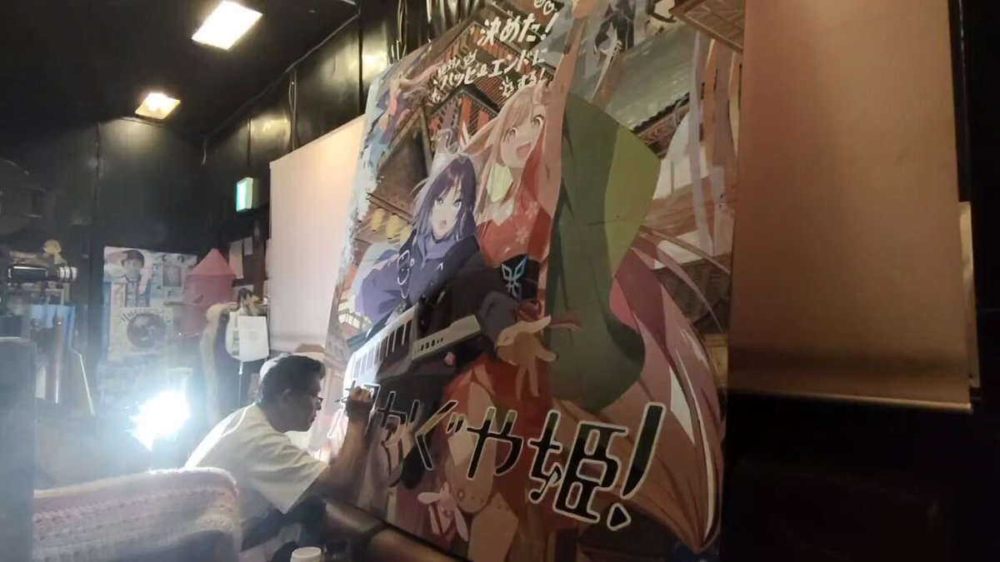
「呼び出し」って何の刑なんだろ
tetuwan atom
@TetuwanA
警告
社内ネットワークで仕事中にこっそり何かをしないでください。
監視されています
『ウィッチャー3』新DLC「追憶の調べ」実は早期リークだった。CD PROJEKT REDが自ら漏洩認める
https://
gamespark.jp/article/2026/0
5/28/167022.html?utm_source=twitter&utm_medium=social&utm_content=tweet
…
日本気象庁の台風基準が独自路線いってる感があるので、
・TD/TS/TY/STY区分を用いる。
・現在10分平均の風速は1分平均とする。
くらいは統一してもいいのでは？と思いますけどね。
個人的には風速はノットにして欲しいのだけど、まあ、km/hでも計算しやすい(ノットのおよそ半分)からいいけど。
中共も対イスラムに関してだけは良くやっているよなー
おかげでカシュガルではウイグル人にペットボトル投げつけられた
日本人は漢族に見えるみたい
Dr. Maalouf
@realMaalouf
2017年から2019年にかけて、中国は200万人のムスリム（うち50万人が子供）を収容所に送り込みました。そこで彼らは、イスラム教からの「脱洗脳」を目的として、アルコールを飲まされ、豚肉を食べさせられました。
中国は公式に、イスラム教を精神疾患とみなしています。
デジタル通貨の国際決済、BISが実証実験成功 コスト減など期待
デジタル通貨の国際決済、BISが実証実験成功 コスト減など期待
24卒のニート男性「IT企業に就職決まった！正社員で手取り28万円でフルリモート！人生勝ち組あざす！」 → 数日後、とんでもないことになっていた・・・ #雑談・その他の話
24卒のニート男性「IT企業に就職決まった！正社員で手取り28万円でフルリモート！人生勝ち組あざす！」 → 数日後、とんでもないことになっていた・・・ - オレ的ゲーム速報@刃の記事ページ
jin115.com
なるせひろのりさんがリポスト
ソニー BRAVIA True RGB TV の新モデル 2 機種、BRAVIA 9 II と BRAVIA 7 II、そして新しい BRAVIA Theater Trio サウンドシステムを発表します！新しい RGB 技術 TV は、真の 3 ダイオード RGB 技術を使用した、これまでで最も明るくカラフルな TV をお届けします。
https://
electronics.sony.com/t/televisions
あと、JTWCこそTD06Wと低気圧番号を付記してくれる(気象庁の台風番号とは必ずしも一致しない)けど、NOAAのNational Hurricane Centerなんかは、番号表記は一切しないし、英語圏のメディアも名前でしか呼ばない。数字で呼ぶ風習が一切ない以上、日本の方が「ヘンな呼び方をしてる」扱いですよ。
気になるけどGoには対応してないっぽいか...TypeScriptで試すか
YKK
@ysknsid25
なんかこいつ、めっちゃ芯食ったレビューしてくる(すごい)
https://
github.com/marketplace/cu
bic-ai-code-reviews
…
初作が「非常に好評」な動物園運営シム続編『プラネット ズー 2（Planet Zoo 2）』カウントダウン放送開始―日本時間5月28日午後10時頃に新情報公開
https://
gamespark.jp/article/2026/0
5/28/167021.html?utm_source=twitter&utm_medium=social&utm_content=tweet
…
なるせひろのりさんがリポスト
ソニーの新「True RGB」TVモデル、Bravia 9 IIとBravia 7 IIの初見。今日発売され、最大115インチのサイズで登場しました。4000 nitsの輝度を備え、RGB LEDはより優れた色再現を約束しますが、HDMI 2.1ポートは依然として2つのみです。
FlatpanelsHDの詳細記事を今すぐ読む！
NOTOSNOWというアパレル事業を、高橋くんと一緒にやってる丸*織物の社長さんが先天性そそっかしいレベル99なのですが、
金沢駅金沢港口の車乗り場に靴を片方だけ置いて来てしまったようです。
左側の靴を見かけた方はご連絡頂けると、、、
ちなみにお酒は飲んでないそうです。
@TakahashiSan69
ねぇコレ思いついた人ぜったい原作者より頭おかしいよ！？
朗読劇『沙耶の唄』
@saya_roudoku
本日はTシャツのご紹介になります
原作の「あるシーン」をイメージしたタッパーに入れて販売します。色はもちろん赤、サイズはLサイズのみとなります。
是非着て観劇してください
※監修中のサンプルになります。製品は劇場でご確認ください。
チケットはこちらから
http://
l-tike.com/song-of-saya
中国CCTVもアジア名の中国語版を見出しに使ってる模様。韓国もアジア名で報道されることが多いという記事もあったし、こうなるとアジア名を使わずに連番数字にこだわってるのは、北西太平洋沿岸諸国では日本だけなのでは…
毛丹青
@maodanqing
中国中央電視台(CCTV)のニュースでも大きく取り上げられた日本の21号台風は、なぜか中国語にすると「飛燕」と名付けられてしまった。#21号台風
『ウマ娘』レッドディザイア、デアリングハートの“原案イラスト”が公開！ゲーム内とひと味違う雰囲気は一見の価値あり
https://
gamespark.jp/article/2026/0
5/28/167020.html?utm_source=twitter&utm_medium=social&utm_content=tweet
…
ためしにアジア諸国での台風に関する表記。
フィリピン気象庁PAGASAの文書。TS JANGMIと書かれてる。
https://
pagasa.dost.gov.ph/tropical-cyclo
ne-advisory-iframe
…
香港の台風情報サイトの表記。JANGMIとその中国名が書かれる。
https://
typhoon2000.ph/multi/?name=JA
NGMI
…
中国語繁体字のWikipedia 「熱帶風暴蔷薇（Jangmi）」表記
https://
zh.wikipedia.org/wiki/2026%E5%B
9%B4%E5%A4%AA%E5%B9%B3%E6%B4%8B%E9%A2%B1%E9%A2%A8%E5%AD%A3
…
年ごとの数字連番方式しか使わない日本人からすると「無駄」かもしれないけど、実は数字方式を使ってるのは日本と韓国くらいなもので、台風の影響を受けやすいフィリピンや台湾・香港などはアジア名を使う。フィリピンのように勝手な名前を付けるよりかは遥かにマシとすら言える。
buvery
@buvery2
荒木さん向けの文句ではありません。が、この【台風に覚えにくい名前をつける習慣】は、無駄だから辞めれば良い。元々はアメリカの習慣で、英語では【具体名がないと話しづらい】という言語習慣が原因で、ABC順に名前を付けていて、頭文字がそれに合う【女性名】を使っている。この習慣は、例えば、【 x.com/arakencloud/st…
お金を持ってみて見方が変わったよ
以前は
「負担が大きいのはこの人達のせいだ」
と思ってたけどね
今は
「これで子供たちに美味しいもの食べさせてあげてよ。
毎日お風呂入ろうよ。
せめて２日に１回は綺麗になろうよ」
って
本人気づいてるか知らないけど、臭いすごいよ
生保特有の臭い分かるよ
ヒムコ a.k.a 杠葉雨音
@__Ximco__
生活保護の件が伸びてきたので色々他の人のリプライなり引用なりを見ていたのだけれど、生活保護を叩いている人に明確に属性の傾向があった
まず、福祉職の人。これはしょうがないと思う。
で、問題なのがFIREとか株配当とかで益を得ている人も多かった。自身も働かずにお金を得ているのに何なんだ？
一体“普通のゴルフ”とはなんなのか？奇妙な世界のゴルフゲーム『Normal Golf Game』Steam体験版配信―『Fruit Ninja』で知られるルーク・マスカット氏が開発・出演
https://
gamespark.jp/article/2026/0
5/28/167019.html?utm_source=twitter&utm_medium=social&utm_content=tweet
…
Torishima / INTPさんがリポスト
Antigravity CLI、コマンド体系から設定ファイルまでびっくりするほどClaude Codeに似せてありますね。#embodied_claude をベタ移植して細かいところだけ変えたらほぼ動きました。
https://
github.com/lifemate-ai/em
bodied-agy
…
#embodied_agy
作業内容としてまとめてるところは、若干設計思想の違いを感じさせますね。

『ドラゴンクエスト12』では鳥山明氏のキャラ、すぎやまこういち氏の音楽を使用！お二人の魂がこもった最後のドラクエに
https://
gamespark.jp/article/2026/0
5/28/167018.html?utm_source=twitter&utm_medium=social&utm_content=tweet
…
こういうビジュアルデザイン、センスだよな・・・
ガチ技術書ですごい
かぐやかわよ！
AzooKey 0.1.4 、内部のニューラル変換性能が良くなった？からかノンストレスで使えるようになってて嬉しい
とはいえなんだかんだ標準 IME で頑張ってしまうことが多く、しかしエージェントと会話したり普通に文字打ってるときは全然 AzooKey の方が快適だからこっちの頻度を増やしていきたいところ
かっこいい！！！！
なるせひろのりさんがリポスト
「本物だと思ってた」外国人の男が出した“運転免許証”…警察官が「材質」に違和感を覚えて確認すると「ICチップなしのニセの偽造免許証」と判明_入手経路はインターネット〈北海道富良野市〉(北海道ニュースUHB)
「本物だと思ってた」外国人の男が出した“運転免許証”…警察官が「材質」に違和感を覚えて確認すると「ICチップなしのニセの偽造免許証」と判明_入手経路はインターネット〈北海道富良野市〉（北海道ニュ...
もう3年が経ったのか…
Torishima / INTP
@izutorishima
もう田中秀和作曲の曲全部学習データとして食わせて AI 田中秀和に新曲作ってもらうしかないな………
輿水畏子さんがリポスト
バンド！
Torishima / INTPさんがリポスト
追加です！スゴい数の追加予約です！
こういう運営関係は基本的に製作Pの長坂を筆頭としたツインエンジンの人達がめっちゃ頑張ってくれている結果だったりします。自分は頑張れーって言いながらポテチ食べてるだけっす。何もできねぇっす！ウスｯ！
『超かぐや姫！』公式
@Cho_KaguyaHime
【Blu-ray特装限定版 追加予約のお知らせ】
『超かぐや姫！』Blu-ray特装限定版につきまして、
多くのお客様にご予約をいただき誠にありがとうございました。
各販売店にて在庫切れの状態となってしまいましたこと、誠に申し訳ございません。
長らくお待たせいたしましたが、
おちフル終わるのか・・・
やっぱオタギャルは「夢」の形をしていない。オタクってこういうのが好きなんでしょという舐めを感じる。
エマくんドール可愛すぎる……
スクエニが「ドラクエ」新作情報公開 ロゴを一新、発売時期は未定
スクエニが「ドラクエ12」最新情報を公開 ロゴ一新、発売時期は未定
MICHEE-N（ミッチー・Ｎ）さんがリポスト
沖縄の路線バスは複数営業所での共同管轄路線が多いことが特徴ですが、便ごとの運行担当営業所がわかる時刻表がない…
ということで作ってみることにしました！
第1弾は東陽バスの泡瀬東線です
今後不定期でいろいろな路線のものを制作する予定です！
#沖縄県路線バスの担当営業所がわかる時刻表
Wordle 1,804 4/6
＞ω＜さんがリポスト
砂浜に打ち上がる深海魚の話 (1/9)
【悲報】クマ出没報告サイト、もうメチャクチャ・・・ #雑談・その他の話
【悲報】クマ出没報告サイト、もうメチャクチャ・・・ - オレ的ゲーム速報@刃の記事ページ
jin115.com
houzakikai@さんがリポスト
◤ ◥
おちこぼれフルーツタルト
完結まであと３話
◣ ◢
今回は特別編につきCarat:Another Facet全面を大公開！
10年超の連載がついに完結へ━━━。
おちこぼれアイドルたちのラストスパートをお楽しみに！
※※※※※※※※※※※※
Torishima / INTPさんがリポスト
振り返ってみると、去年12月にGPT-5.2がリリースされて以来の進歩を思うと、かなりクレイジーだ。
今では本番環境での使用率が<1%しかなく、かなり時代遅れだと見なされている！
『デモンキルデモン ～黄泉1984～』本日5月28日発売。架空日本の異世界迷宮「黄泉」を舞台に脱出を目指す3DダンジョンRPG
https://
gamespark.jp/article/2026/0
5/28/167017.html?utm_source=twitter&utm_medium=social&utm_content=tweet
…
Torishima / INTPさんがリポスト
Codexの計算フリート管理を簡素化するため、6月2日にChatGPTアカウントでログインした際に、Codex上でGPT-5.2およびGPT-5.3-Codexを廃止します。
無料プランでは、GPT-5.5が今後構築および作業に使用するデフォルトの最先端モデルとなります。
これらのモデルはAPI上では引き続き利用可能です。
NYダウ反発で始まる、一時300ドル高 ホルムズ海峡の開放期待
NYダウ反発で始まる、一時300ドル高 ホルムズ海峡の開放期待
なるせひろのりさんがリポスト
全日本教職員組合の声明が余りにも偏っていて腹が立つので添削した。
全教(全日本教職員組合)
@ZenkyoOfficial
【声明】「同志社国際高校の死亡事故を受けた文部科学省の見解について」
全教は5月27日、中央執行委員会声明を発表しました。
https://
zenkyo.jp/opinion/12612/
なるせひろのりさんがリポスト
ドラクエ12の主人公
トカゲの亜人？と同じ剣を持っていますね！
さらに髪型の分け目まで同じ
これは『現実世界の姿』と『夢の中の姿』なのでは？？
Torishima / INTPさんがリポスト
そうですね。職場の時間は一切使わず、職場の資金を一切使わず、論文も一切書かない、という決断をすれば同じことを多くの人ができると思います。でも、まともな精神の人は数年間誰にも評価されず、良い結果が得られる保証が全く無く、トップカンファレンスで認められるような名誉も無い挑戦に時間を割
なんで公職選挙法違反にならないのだろう？
SUNSUN
@Ox7af39d2c
松井氏の手口が書かれていますが、
スマホ20台を使いGmail多重アカウントで、X・TikTokなど計240アカウントを作成。
AI自作ツールでショート動画をほぼ自動量産し、対立候補をネガティブ情報で埋め、アルゴリズムを操作。
高市氏勝利に大きく貢献したと…。
こんなことしたらまずいよね。 x.com/shukan_bunshun…
16ビット高速2Dアクションプラットフォーム『Aggelos 2』概要トレイラー公開―天使と悪魔の2形態を使い分け生き延びる
https://
gamespark.jp/article/2026/0
5/27/167016.html?utm_source=twitter&utm_medium=social&utm_content=tweet
…
なるせひろのりさんがリポスト
007 First Lightで私が気に入った点の一つは、アンチャーテッド4に似たプロシージャルボディアニメーションの使用です。
キャラクターの手が移動中に近くの物体と自然に相互作用する点で、これはゲームではまだ比較的珍しく、顕著なリアリズムの層を加えています。

トウカイのクマさんがリポスト
！！！！！！！！！！！！！！！！
（6/29（月）よろしくお願いいたします）
#アイマスch
アイドルマスターチャンネル／アイマスch
@imas_ch
─ ─ ─ ─ ─ ─ ─
#アイマスch メンバー限定配信
6月ゲスト決定&お便り募集中！
─ ─ ─ ─ ─ ─ ─
出演
MC #天音ゆかり
ゲスト #峯田茉優
お便り募集中
https://
forms.gle/FG23YTfHe6NW9t
EP6
…
投稿は❝誰でも❞可能です！
▼メンバー加入はこちら
https://
youtube.com/@imas-official
/join
…
今期学祭しすぎていて、ごちゃごちゃになってる
オタギャル
渡辺浩弐さんがリポスト
2005年に東京藝術大学に映像研究科が新設されて、北野武特別教授が「鳴り物入り」で着任したとき、「これで映画は死んだ」「大衆娯楽を舐めるな」「国家権力のテコ入れで、いい映画が生まれるはずはない」という議論がありました。ゲームが新たに加わったこのタイミングで思い出しておきたい議論です。
noteが自動翻訳の提供開始 まず英語、海外読者を獲得
noteが自動翻訳の提供開始 まず英語、海外読者を獲得
そもそも今日日BDを数十万枚生産する体制自体が整ってないんだろうなあ オフィシャル通販限定なのもしゃーないというか
本当に最後になりそう
Torishima / INTPさんがリポスト
『超かぐや姫！』、ここから追加20万枚（＋？）おそらく最後のアニメBlu-ray大ヒット作になるのでは。
トヨタ、３年ぶり「本部」新設 製造技術の専門組織
トヨタ、3年ぶり「本部」新設 製造技術の専門組織
オス（去勢）なんてのも出てくるね。肉を美味しくするためにねじって取ると聞いた。
レイ
@rei_fhs77
個体識別番号が付いている牛肉を食べたので検索かけた
なんか辛くなった
この洗濯物、今夜中に乾くかな…梅雨時のピンチに役立つ衣類乾燥機
この洗濯物、今夜中に乾くかな…梅雨時のピンチに役立つ衣類乾燥機 | ギズモード・ジャパン
なるせひろのりさんがリポスト
全教（全日本教職員組合）が声明
これ、文科省の報告書を読んでないでしょ…
※ちなみに全教は共産党系の教職員組合、日教組は立憲民主党系の教職員組合
全教(全日本教職員組合)
@ZenkyoOfficial
【声明】「同志社国際高校の死亡事故を受けた文部科学省の見解について」
全教は5月27日、中央執行委員会声明を発表しました。
https://
zenkyo.jp/opinion/12612/
バカども少しは萎縮して自重しろ
産経ニュースWEST
@SankeiNews_WEST
「極めて恣意的、撤回求める」辺野古事故の文科省調査結果に京都教職員組合が声明 - 産経ニュース
https://
sankei.com/article/202605
27-QSR22GY2IZP2XLWESUUGPNX73Q/
…
「今回の文科省の措置がいっそう学校現場を委縮させ、子どもたちと一緒に考える平和教育・政治教育を後退させることになりかねないと懸念している」とした。
なるせひろのりさんがリポスト
◪有り難うございました◪
TVアニメ『Re:ゼロから始める異世界生活』
◪4th season 第8話(第74話)
「オマエハダレダ」
ご視聴有り難うございました。
引き続き感想は
#リゼロ #rezero でご投稿ください。
まゆりを助けようとすると紅莉栖が助からないみたいな これなんてシュタインズユーフォ、、RP
Torishima / INTPさんがリポスト
『超かぐや姫！』Blu-ray特装限定版、オフィシャルストア通販のみの事実上の分割受注生産、現実的な落としどころとしては望み得る最高の施策では。
＞RT
政令市が道府県から独立、「特別市」再び議論 副首都の要件に浮上
https://
nikkei.com/article/DGXZQO
UA016JY0R00C26A5000000/?n_cid=SNSTW005&n_tw=1779891623
…

両陛下、国賓フィリピン大統領夫妻招き宮中晩さん会 悠仁さま初出席
両陛下、国賓フィリピン大統領夫妻招き宮中晩さん会 悠仁さま初出席
中国半導体大手の長鑫科技、IPO承認 6900億円規模調達へ
中国半導体大手の長鑫科技、IPO承認 6900億円規模調達へ
患者の状態を踏まえて薬の代替が可能かどうか考慮することなどを求めています。←？【独自】ADHD治療薬「コンサータ」が供給不足 厚労省が事務連絡を発出 医療機関で過剰な発注控えるよう呼びかけ(FNNプライムオンライン（フジテレビ系）)
#Yahooニュース
【独自】ADHD治療薬「コンサータ」が供給不足 厚労省が事務連絡を発出 医療機関で過剰な発注控えるよう呼びかけ（FNNプライムオンライン（フジテレビ系）） - Yahoo!ニュース
なるせひろのりさんがリポスト
【悲報】左派四人衆、文科省を怒らせる→辺野古転覆事故の調査結果をHPで公開へ
文科省が同志社国際の平和学習を初の教育基本法違反に認定
↓
左派四人衆「踏み込みすぎだ」と反発
↓
文科省、「じゃあ一つ一つ積み重ねた事実を公開するから読んでみろ」と同志社国際の調査結果をHPで公開へ←ｲﾏｺｺ
産経ニュース
@Sankei_news
文部科学省、同志社国際の調査結果をHPで公開 武石知華さん遺族も公開求める＜全文＞
https://
sankei.com/article/202605
26-U5GQNHTC4NNBTI4RMPDA4JIJQU/
…
複数の政治家から「文科省の判断は踏み込みすぎだ」など反発の声が相次いだことを踏まえて方針転換した。
【朗報】ドラクエ最新作“ドラゴンクエストXII”、チラ見せ映像が公開される
■ドラゴンクエストXII -夢の彼方へ-
・2021年に発表されたタイトル「選ばれし運命の炎」から「夢の彼方へ」へ変更
・不思議な夢が見える青年が主人公
・鳥山明デザイン＆すぎやまこういち曲を採用
令和の「ビアンカ・フローラ論争」！？ 最新作『ドラゴンクエストモンスターズ4』の主人公抜擢に、早くも沸き立つゲームファン
https://
gamespark.jp/article/2026/0
5/27/167015.html?utm_source=twitter&utm_medium=social&utm_content=tweet
…
副首都「担当相」新設で推進 法案判明、人口・経済を多極分散
副首都「担当相」新設で推進 法案判明、人口・経済を多極分散
DQM4がSteamでも出るあたりPCゲームが一般的になったってのを感じる
絶対という言葉が強すぎるせいで百発百中みたいに語られがちだけど、実際には「絶対的な(←この意味もややこしいw)音感が"どの程度"分かるか」という程度問題だよね。昔「和音は分からない」って言ったら「なんだ絶対音感じゃないじゃん」て言われて、「違うそうじゃない」ってなった
りおえ
@rioe_mh
絶対音感論争起きてるけど、そもそも絶対音感の定義を
・1音だけ鳴ってるドレミ…が分かる
・何音も同時鳴ってるのを聞き分ける
・440Hzと441Hzの違いを聞き分ける
のどのレベルを指しているのか？
1つ目のやつは幼少期音楽やってりゃ誰でもできるでしょと思うけど、2つ目3つ目は訓練必要だと思う。
ボーダーコリーとハスキーの違い
ボーダーコリーとハスキーの違い : ハムスター速報
「ただ一つ、SCP-8900の影響を受けていないポテチのみが真実を伝えていくことだろう。私は残念でならない、諸君。本当に残念だよ。」
http://
scp-jp.wikidot.com/scp-8900-ex
盛り塩
@morisugi_warota
ほんとに色なくなってる！
見た目の印象もチェンジ。サングラスになる眼鏡、めっちゃ快適です
見た目の印象もチェンジ。サングラスになる眼鏡、めっちゃ快適です | ギズモード・ジャパン
とりしま (Sub I/O)さんがリポスト
http://
nani.now の場合はチェック項目が107個あって（ほぼチームプラン関連）、とてもじゃないけど人力でチェックしてられないんだよな…
こういうとこにAIを使って、人間は楽しいお仕事をするのだ
Nani Translate: Fast, Natural-Sounding AI Translation
ホテルの部屋の照明スイッチと卓上のコンセントを連動させるな！
寝てる間に充電できねーだろ！
で、壁のコンセントに変更したら、別の照明と連動してやがる…
風呂場のコンセントが常時通電だわ…
X民「20年かけて貯めた900万円で株やってみるわ」 → 結果・・・ #雑談・その他の話
X民「20年かけて貯めた900万円で株やってみるわ」 → 結果・・・ - オレ的ゲーム速報@刃の記事ページ
jin115.com
２０万枚キャパを用意するくらいの規模がありそうと見積もってるのとんでもねえことだよな
オマエハダレダ
スペースXのIPO、みずほ・楽天・SBI証券で募集 NISA対象
https://
nikkei.com/article/DGXZQO
UB279HP0X20C26A5000000/?n_cid=SNSTW005&n_tw=1779890335
…
23社にのぼる幹事証券には米国みずほ証券が加わっています。
みずほ、楽天、SBIの証券3社は米国みずほ証券からの委託を受けて日本の顧客に販売します。
スペースXのIPO、みずほ・楽天・SBI証券で募集 NISA対象
「サムライジャック」などに影響を受けたガンマンACT『Rose and Locket』Steamでリリース！娘を救うため、1人のアウトローが魂の世界で七つの大罪に立ち向かう
https://
gamespark.jp/article/2026/0
5/27/167014.html?utm_source=twitter&utm_medium=social&utm_content=tweet
…
Torishima / INTPさんがリポスト
課金ありのWebサービス開発のコツなんですが、
あらかじめ「決済関連の動作確認チェックリスト」を作っておいて、
Codexのブラウザ操作で全部チェックしてもらうようにすると超ラクです
Stripeのテストクロックを使えばサンドボックス環境でサブスク更新・解約、カードの期限切れとかも再現できる
確かに本当にこの円盤全部売り切れたら円盤だけで33億円になるのか・・・さすがにないよね？
サブタイトルは「夢の彼方へ」に変更
ドラクエ12、発売は「もうしばらくお待ちいただきたい」 開発体制を変更してリスタート
https://
nlab.itmedia.co.jp/cont/articles/
3858418/
…
期待すぎる
ウマ娘が最大20万なのでこれだけあればいけるやろ・・・ってことなのか？
イーロンに粛清されてしもた・・・
モヒにゃぱん
@nyapan_mohy
寝てる間にナルエビちゃん凍結されるとか、もうギャグやろｗ x.com/oikon48/status…
就活にAI利用は27年卒の85％、18ポイント上昇 マイナビ調べ
就活にAI利用は27年卒の85%、18ポイント上昇 マイナビ調べ
現行犯逮捕や監督辞任が本当に妥当かどうかという問題はあると思うんだけど、喧嘩の仲裁とはいえ父親それもスポーツやってる人が18の娘掴んで投げるのが「家庭内のこと」で済まされるのかというとねぇ…これその辺の草野球おじさんだったらDV親父だ！ってなって誰も問題にしなかったでしょ…？
とりかわ𓅪
@yukky115
阿部慎之助問題、「ChatGPTに頼るなんてねぇ…（長女は未熟ですね）」みたいな空気をマスコミは醸し出してたが、父親があんなで母親がその場にいたにも関わらず、暴力を振るわれた身体で子ども部屋でひとりChatGPTに相談する18歳の女の子を想像すると壮絶でしょ。相談出来る大人は家庭内にいないとか。
リジスさんがリポスト
稚内の更に向こう側にある、真の最果てに行ってきました！
宗谷岬と違ってめちゃくちゃ遠かった
楽画喜堂に5月28日配信開始の電子書籍リストを追記しました。＞
https://
rakugakidou.net/#20260528kindl
es
…
貝さんさんさんがリポスト
アニメ制作に一緒に取り組める仲間を募集しております！
よろしくお願い致します
ROLL2
@ROLL2__
┏・・・・・・・・┓
求人情報
┗・・・・・・・・┛
アニメーションスタジオROLL2では、
中途スタッフ（正社員）を募集中です。
現在制作中の『きみが死ぬまで恋をしたい』『描くなるうえは』をはじめ、今後もさまざまな作品に取り組んでいきます。
詳細はホームページよりご確認ください。
【期間限定】TVアニメ『BLEACH』ED映像｜「Re:pray」Aimer
Aimerを最初に知ったのは本作か『NO.6』だったか。この曲はMVも良く、とても大好き。
最終クールの放送に向け、歴代シリーズを各篇ごとに振り返る特別企画『TV ANIMATION『BLEACH』THE STORIES』が始...
youtube.com
とりしま (Sub I/O)さんがリポスト
キャラコメンタリー、弊社フジヤマがやりたいと言い出し、急遽各方面のプロが集結し実現しました！かなり…いい内容になったと思いますのでぜひ聞いてほしいです！
『超かぐや姫！』公式
@Cho_KaguyaHime
【Blu-ray特装限定版 追加予約のお知らせ】
『超かぐや姫！』Blu-ray特装限定版につきまして、
多くのお客様にご予約をいただき誠にありがとうございました。
各販売店にて在庫切れの状態となってしまいましたこと、誠に申し訳ございません。
長らくお待たせいたしましたが、
輿水畏子さんがリポスト
うおー
『ウマ娘』新シナリオのテーマは“ラーメン”！？「らっしゃい！トレセン軒！～恩返し、始めました～」が6月下旬に開幕決定
https://
gamespark.jp/article/2026/0
5/27/167013.html?utm_source=twitter&utm_medium=social&utm_content=tweet
…
なるせひろのりさんがリポスト
『ドラクエ12』の映像がついにお披露目！「ドラゴンクエストからのお知らせ」発表まとめ
https://
news.denfaminicogamer.jp/news/2605274h
『ドラゴンクエストXII 夢の彼方へ』
・サブタイトル、開発体制を変更してリスタート
・鳥山明先生のキャラクター、すぎやまこういち先生の音楽

なるせひろのりさんがリポスト
Nintendo Switch 2版『ドラゴンクエストXI 過ぎ去りし時を求めて S』は、パフォーマンス優先モードと画質優先モードの切り替えが可能
・パフォーマンス優先モード（1080p/60fps）
・画質優先モード（1440p/30fps）
ファミ通.com
@famitsu
『ドラゴンクエストXI 過ぎ去りし時を求めて S』Nintendo Switch 2で発売決定
https://
famitsu.com/article/202605
/76172
…
Switch2でドラクエ11Sが楽しめる！ 本日から順次予約開始
すみません、可愛いとか体格差とかそういう完走より先にこれが出てしまいました。
付き合ってるじゃん。
「ドラゴンクエストXII」の最新映像公開。開発は体制を変更してリスタートし，サブタイトルも「夢の彼方へ」に
https://
4gamer.net/s/G057248.2605
27058
…
本作は，ふしぎな夢が見えてしまう主人公の冒険を描くものになり，ダークではなく明るい世界が舞台になるようだ
バトルグラウンド最強ミニオンは、理論上「エンハンスメカーノの毒爆破係」だと思うのだけど、実戦で作れた人いるのかな？ #バトグラ #HSBG
なるせひろのりさんがリポスト
「Mr. KARATE」いったい何者なんだ‥
皆さま是非、ご覧ください
音響監督としてはとくに『パコーーン』
そして『ハアァーン‥』
に拘りました
#CotW #餓狼伝説_MRKARATE参戦
餓狼伝説 City of the Wolves
@GAROU_PR
「Mr.KARATE」配信記念
大張正己氏によるスペシャルロングアニメーショントレーラー公開！
#CotW #餓狼伝説_MRKARATE参戦
輿水畏子さんがリポスト
シリーズ最新作『ドラゴンクエストモンスターズ4 枯れ木の国のビアンカ・フローラ』発表！ ビアンカとフローラが主役か
シリーズ最新作『ドラゴンクエストモンスターズ4 枯れ木の国のビアンカ・フローラ』発表！ ビアンカとフローラが主役か | Game*Spark - 国内・海外ゲーム情報サイト
貝さんさんさんがリポスト
そよちゃん誕生日おめでとう
生態系を蘇らせる海洋都市建設シム『Life Below』Steamにてリリース―保護団体の支援に繋がるDLCも
https://
gamespark.jp/article/2026/0
5/27/167011.html?utm_source=twitter&utm_medium=social&utm_content=tweet
…
美術館に行くと老化がゆっくりになるかもしれない
美術館に行くと老化がゆっくりになるかもしれない | ギズモード・ジャパン
「ごちゃつきデスク」の戦い、Ankerのケーブル二刀流電源タップで勝てるよ #BuyPR
デスクのごちゃつきを解消してくれるアイテムは数あれど、「巻取り式USB-Cケーブルが2本付き・7台同時充電・最大100Wの急速充電ができる電源タップ」ときたら…武装力の高さがうかがえますよね。 そんな強者が、Anker（アンカー）の「Nano Charging Station（7-in-1, 100W, 巻取り式 USB-Cケーブル）」なんです。
gizmodo.jp
『ドラクエXII 夢の彼方へ』ヒロイン？らしき女の子が可愛い！開発中映像が公開
https://
gamespark.jp/article/2026/0
5/27/167010.html?utm_source=twitter&utm_medium=social&utm_content=tweet
…
いるか@心が酒びたっているんださんがリポスト
おめでとう
#長崎そよ誕生祭2026
#長崎そよ生誕祭2026
偽装結婚というより私が美人局や詐欺に騙されてるようにしか見えないかもしれません。
カレキの話なんだ
なるせひろのりさんがリポスト
車検で変な客を追い返すための話
店「車検お見積りは１５万円になります」
客「おい！高すぎるぞ！」
店「車検に必要な部品と交換された方がいい部品が含まれてます」
客「通すだけでいいから」
店「え？これは交換しないと車検通りませんよ？」
客「それ嘘ですよね？（怒）」
店「はい？」
コスト諸々引いて委員会に20％入ると仮定して20万枚で6～7億、30％仮定なら10億円以上。そこからさらに伸びるだろうから、興収分配分+各種グッズ+企業コラボ等ライセンス料と合わせてツインエンジンへの利益は大きそう。
「ドラゴンクエストモンスターズ4 枯れ木の国のビアンカ・フローラ」発表。主人公は子ども時代のビアンカとフローラ？
https://
4gamer.net/s/G101055.2605
27061
…
Haruhiko Okumuraさんがリポスト
Codexを使って今、会議をリアルタイムで文字起こしできるようになりました！さらに、会議の最中にCodexに会議について質問することもできます！
新しいCodex Meeting RecorderスキルをGPT Realtime
つなまよさんがリポスト
『ドラゴンクエストモンスターズ 4 枯れ木の国のビアンカ・フローラ』発表！幼い姿のビアンカとフローラがお披露目
https://
news.denfaminicogamer.jp/news/2605274g
映像にはクチバシのある犬のような謎のモンスターの姿も。Switch、Switch 2、PS5、Xbox Series X|S、Steam、Windows向けに発売予定
#ドラクエの日 #DQ40th
あ、スターアニス（八角）、（ペパー）ミント、（パ）プリカで香辛料つながりか
#techno / #VoidcraftRecords
Joey_M - Grinding Module
https://
youtube.com/watch?v=_J4iQZ
rh65Y&list=PL_F42GZ969hiF-tWFt6DFT0O0l_-BEym-&index=4
…
Label: Voidcraft Records
Artist: Joey_M
Title: Rust In The Veins EP
Track: Grinding Module
Catalogue Number: VCR001
Release Date: May 29, 2026
『ドラクエ12』開発体制を変更しリスタートへ！タイトルは『ドラゴンクエス12 夢の彼方へ』に変更、雰囲気もダークから明るいものに
https://
gamespark.jp/article/2026/0
5/27/167009.html?utm_source=twitter&utm_medium=social&utm_content=tweet
…
#dnb / #Overview
Wingz & Verbz - Fresh Air
https://
youtube.com/watch?v=JfgV2I
SJpak&list=PL_F42GZ969hiF-tWFt6DFT0O0l_-BEym-&index=5
…
"Wingz & Verbz team up to bring 'Fresh Air' on Overview Music."
#dnb / #Viper
10xx - The Unknown
https://
youtube.com/watch?v=Xp8poP
VcmLc&list=PL_F42GZ969hiF-tWFt6DFT0O0l_-BEym-&index=3
…
"We’re proud to return with the latest instalment of our 'Future Fire' series"
Torishima / INTPさんがリポスト
寝てる間にナルエビちゃん凍結されるとか、もうギャグやろｗ
Oikon
@oikon48
ナルエビちゃん凍結されてますか...？
https://
x.com/NullEvi03
超かぐや姫！特装版BD、予約再開の用意できる分で20万枚見込んでるということなのかな？通常版諸々併せてさらに伸びそう。オリジナル作品で今の時代にパッケージでこれだけ賑わせるのもすごい。
#dnb / #VoltageArtistsMusic
Bitsune & M’Go, Basskillah – Burn Fayah
https://
youtube.com/watch?v=lNM1Bc
N5QMc&list=PL_F42GZ969hiF-tWFt6DFT0O0l_-BEym-&index=2
…
Voltage Artists Music
➔Released: 29/05/2026
➔Cat: VAM003
かわいい！鳥さんもいます
10分しかないし大した内容無さそうとは思ったけどマジでこれしかないとは思わんやん
12発売日くらいは出ると思ってたよ
#dnb / #UKF
Malaa (Alter Ego) x ÆON:MODE - Gave Birth
https://
youtube.com/watch?v=zqw72l
PFz_c&list=PL_F42GZ969hiF-tWFt6DFT0O0l_-BEym-
…
"Welcoming mysterious french producer Malaa to UKF with his Alter Ego collaboration with ÆON:MODE."
ベトナム株が最高値圏、MSCI格上げ期待でマネー流入 不動産も支え
ベトナム株が最高値圏、MSCI格上げ期待でマネー流入 不動産も支え
【速報】『ドラゴンクエストモンスターズ4 枯れ木の国のビアンカ・フローラ』発売決定！幼少期のビアンカとフローラが主人公に！ #ゲーム業界
【速報】『ドラゴンクエストモンスターズ4 枯れ木の国のビアンカ・フローラ』発売決定！幼少期のビアンカとフローラが主人公に！ - オレ的ゲーム速報@刃の記事ページ
jin115.com
プロフィールカード何個か保存枠あると嬉しいんだけどなぁ
今の保持したまま新しいの作りたい
なるせひろのりさんがリポスト
007 First Lightには、サイドから見ると一部のモニターの視野角が悪くなるという、クールな小さなディテールがあります。
【速報】『ドラゴンクエスト12 夢の彼方へ』開発一新でサブタイ変更！ゲーム映像公開！主人公など #ゲーム業界
【速報】『ドラゴンクエスト12 夢の彼方へ』開発一新でサブタイ変更！ゲーム映像公開！主人公など - オレ的ゲーム速報@刃の記事ページ
jin115.com
なるせひろのりさんがリポスト
大張先生のユリサカザキ（47）※美魔女 の突然の新規描きおろし絵にユリサカ仮面は死んだ
生放送終了が間に合い、ドラクエ12発表と新モンスターズ発表の放送を見れました！
今井翔太 / Shota Imai@えるエル
@ImAI_Eruel
このあと、BS11 報道ライブインサイドOUTに出演し、Mythos関連のことを話します。
モンスターズもう何も信用してないから別にいいよ
えぇ〜
モンスターズ3やらかしで終わったやん何だったのあれ
春日影を忘れないで←
3曲とも、あのテンポでオルタネイトピッキングあれだけやってるの愛音ちゃんマジ凄い子
ゆいこ
@EQJFqXbmjY44753
千早愛音、ギター始めて3ヶ月程度で迷星叫や迷路日々のバッキングが弾ける時点で才能の塊過ぎる
MyGO!!!!!のバッキングはストローク、アルペジオ、ブリッジミュートなどあらゆる点で普通に難しい
そこら辺アニメだからで済まされるが
なるせひろのりさんがリポスト
【台風情報】
5月27日(水)21時現在、台風6号(チャンミー)はフィリピンの東を北上中。今後は発達して暴風域を伴い、6月はじめに強い勢力で沖縄や奄美に接近するおそれがあります。
その後は進路を東寄りに変える可能性もあるため、本州方面も今後の台風情報に注意が必要です。
https://
weathernews.jp/news/202605/27
0241/
…
タラワで朽ち果てる20cm砲や14cm砲台付近には五角形状の形をした謎のコンクリート残骸が落ちている。
砲台のどこかの足場などではないかと思うが詳細が全くわからない。海面上昇や地盤沈下で波にさらわれてなくなってしまうのが危惧される……
解散
なるせひろのりさんがリポスト
『ドラクエ12』は開発体制を変更してリスタート。現在も開発は継続中
https://
news.denfaminicogamer.jp/news/2605274h
#ドラクエの日 #DQ40th
えぇ…
『No Man’s Sky』10周年目前の大型アプデ「The Swarm」配信へ！史上最大規模の宇宙戦闘、超高火力レーザー搭載の巨大兵器に立ち向かえ
https://
gamespark.jp/article/2026/0
5/27/167008.html?utm_source=twitter&utm_medium=social&utm_content=tweet
…
12きたか
痛いのは嫌なのでアルコールに極振りしたいと思います (@ ニューシンマチ in 京都市, 京都府)
https://
app.foursquare.com/share/checkin/
6a16eb7c52f7f35c3bf8a528?s=OXDgzR1kBnDv5jSEmw-v4cMRuM8&lang=en
…
台風6号/Tropical Depression 06W JANGMI、数値予報は相変わらず初期替わりも大きく、日本の南を東進する点は大まかに一致しているものの、メンバー間の差異も大きいので、本土への影響はまだわからない感じですかねぇ。発生したばかりの擾乱ですし。
https://
tropicaltidbits.com/storminfo/#06W
フロッピーディスク1枚分「1.44mb以下」のゲーム開発コンテスト始動 我こそはという開発者、集え！！ #ゲーム業界
フロッピーディスク1枚分「1.44mb以下」のゲーム開発コンテスト始動 我こそはという開発者、集え！！ - オレ的ゲーム速報@刃の記事ページ
jin115.com
なるせひろのりさんがリポスト
【は？】れ「同志社国際の教育基本法違反認定は撤回すべき」
→ 松本文科相「撤回しません」
→ れ「この問題の根本は、高市自民が国民を無視して戦争準備を推し進めてる事なんですよ！」
【は？】れ「同志社国際の教育基本法違反認定は撤回すべき」→ 松本文科相「撤回しません」→ れ「この問題の根本は、高市自民が国民を無視して戦争準備を推し進めてる事なんですよ！」
いらっしゃいませ！
Torishima / INTPさんがリポスト
正確な販売数は分かりませんが、某サイトによればアニメ作品でウマ娘が累計19万枚なのでもしかしたら日本史上1位をもぎ取ることができるレベルの枚数いけるのでは！？！？
悠仁さま、宮中晩さん会にデビュー 国賓迎え最上級のおもてなし
悠仁さま、宮中晩さん会にデビュー 国賓迎え最上級のおもてなし
【民泊規制の抜け穴に】
マンション一室をホテル登録、東京都心で急増
https://
nikkei.com/article/DGXZQO
CC2158F0R20C26A4000000/?n_cid=SNSTW005&n_tw=1779852989
…
民泊は拡大と同時に、地域でのトラブルも増えています。
ただ、旅館・ホテルとして運用すると「旅館業法」上で営業する形態となり、営業日数といった民泊新法上の規制が及ばなくなります。
マンション一室をホテル登録、東京都心で急増 民泊規制「抜け穴」に
『ドラゴンクエストXI 過ぎ去りし時を求めて S』スイッチ2版9月24日発売！画質とパフォーマンスを優先する2つのモード搭載
https://
gamespark.jp/article/2026/0
5/27/167007.html?utm_source=twitter&utm_medium=social&utm_content=tweet
…
なるせひろのりさんがリポスト
「Mr.KARATE」配信記念
大張正己氏によるスペシャルロングアニメーショントレーラー公開！
#CotW #餓狼伝説_MRKARATE参戦

Torishima / INTPさんがリポスト
合 計 2 0 万 枚 増 産！ ？
歴代アニメ円盤売上枚数調べてみたけどこのレジェンド群超える可能性あるってこと？
ウマ娘 プリティーダービー season2
192,975枚
新世紀エヴァンゲリオン
131,166枚
ラブライブ!
116,892枚
鬼滅とか入れるとまた別だと思うけどエグい
#超かぐや姫
『超かぐや姫！』公式
@Cho_KaguyaHime
【Blu-ray特装限定版 追加予約のお知らせ】
『超かぐや姫！』Blu-ray特装限定版につきまして、
多くのお客様にご予約をいただき誠にありがとうございました。
各販売店にて在庫切れの状態となってしまいましたこと、誠に申し訳ございません。
長らくお待たせいたしましたが、
Tropical Depression 06W発生。気象庁は早々に台風6号(TS相当)に格上げしたけど、JTWCは25KTS級で一旦TD止まり(TS格上げには34KTS以上必要)。UW-CIMSSのADT解析でもCI値2.0(30KTS相当)なので、やや気象庁の先走り感が。
https://
metoc.navy.mil/jtwc/products/
wp0626.gif
…
https://
tropic.ssec.wisc.edu/real-time/adt/
odt06W.html
…
とりしま (Sub I/O)さんがリポスト
だから「いただきます」や「ごちそうさまでした」を言うんやで
レイ
@rei_fhs77
個体識別番号が付いている牛肉を食べたので検索かけた
なんか辛くなった
長寿でがんにもなりにくいネズミの遺伝子を研究したら、ヒアルロン酸に秘密があることが分かってきた
長寿でがんにもなりにくいネズミの遺伝子を研究したら、ヒアルロン酸に秘密があることが分かってきた | ギズモード・ジャパン
ドラゴンクエストからのお知らせ
https://
youtu.be/nRKyyK7S-Zw?si
=kOr3Pw7uMpOcpT3i
…
@YouTube
より
『ドラゴンクエストXII』は、新しい体制でリスタートを行い、タイトル名を『ドラゴンクエストXII 選ばれし運命の炎』から『ドラゴンクエストXII 夢の彼方へ』と改め、ロゴと共に一新いたしました。ゲームデザイナー・堀井雄二氏とエグゼクティブプロデューサー・齊藤陽介から、本発表に関するメッセージを、開発中のゲーム映像...
youtube.com
時々海岸でも見られる夜光虫。綺麗ですねー。
47NEWS
@47news_official
鎌倉・材木座に夜光虫 青白く発光、一帯が幻想的な雰囲気に
https://
47news.jp/14370109.html
アニメ系買取店がまた増える…
✧━━━━━━━━━━━━✧
#初星学園放送部
✧━━━━━━━━━━━━✧
ご視聴ありがとうございました！
来週も21時からお届けします！
アーカイブはこちら
https://
asobichannel.asobistore.jp/watch/rmhpyhf97
次回もお見逃しなく！
#学マス
【埼玉】調子に乗ったイスラム教徒「日本人の法律なんてどうでもええわ」川越に巨大モスクを無申請・無許可で違法建築←日本がガチで舐められまくってる件
【埼玉】調子に乗ったイスラム教徒「日本人の法律なんてどうでもええわ」川越に巨大モスクを無申請・無許可で違法建築←日本がガチで舐められまくってる件 : ハムスター速報
64時代への情熱注ぎ込んだ王道3Dプラットフォーマー『Spherebuddie 64』発売。ちっちゃなボディで超ジャンプ！
https://
gamespark.jp/article/2026/0
5/27/167006.html?utm_source=twitter&utm_medium=social&utm_content=tweet
…
✧━━━━━━━━━━━━✧
#初星学園放送部
ゲスト情報！
✧━━━━━━━━━━━━✧
6/3(水)放送回
川村玲奈 さん (篠澤広役)
伊藤舞音 さん (倉本千奈役)
投稿フォーム
https://
asobistore.jp/content/title/
Idolmaster/gakuenradio/contact/
…
募集は金曜午前まで！おたよりお待ちしています！
#学マス
「ドラゴンクエストXI 過ぎ去りし時を求めて S」のSwitch2版が9月24日に発売決定。オンラインストアの予約受付もスタート
https://
4gamer.net/s/G101054.2605
27060
…
パッケージ版には限定の特別スリーブが付属
ロボのエンジェルしてみたかった人生
reading... ヒト型AIロボスタートアップのアトムが30億円調達 「日本のGDPを1％アップ」目指す - ITmedia NEWS
ヒト型AIロボスタートアップのアトムが30億円調達 「日本のGDPを1％アップ」目指す
輿水畏子さんがリポスト
コラボ3組目
Anker、燃えにくいモバイル充電器 難燃素材で発火リスク低減
Anker、燃えにくいモバイル充電器 難燃素材で発火リスク低減
神聖魔法で、腐敗を清める…ってのは、神聖魔法で微生物を全滅させるってことなん？
あー、こっちもたまらんですね。
【栗の声で聴いてみて！】不思議色ハピネス / 小幡洋子 cover by 栗林みな実 〈魔法のスター マジカルエミ〉
https://
youtu.be/iuJLUoJQ_Uk?si
=90eZj7e0FOJwMnJM
…
@YouTube
より
TVアニメ『魔法のスター マジカルエミ』OPテーマ不思議色ハピネス / 小幡洋子 （1985年リリース）作詞：竜真知子作曲・編...
youtube.com
わあ、ありがとう。観に来て、観に来て！
舛本和也
@kenji2413
CAMPFIREで「私たちは、これからも作り続ける。－
http://
P.A.WORKS創業の地で映画祭を実現したい」の支援者になりました！
https://
camp-fire.jp/projects/93473
0/view?utm_source=twitter&utm_medium=social&utm_campaign=tw_sp_share_c_msg_backers_show
… #クラウドファンディングCAMPFIRE @parubooksより
Torishima / INTPさんがリポスト
ナルエビちゃん凍結されてますか...？
https://
x.com/NullEvi03
null-sensei
@GOROman
問い合わせが多いのでナルエビちゃん三世と同じスクリプトをオープンソース化しました。
https://
github.com/GOROman/nullev
i03
…
／
6月3日 月村手毬の誕生日に向けて
「誕生日お祝いメッセージ」募集中
＼
▼送付先はこちら
https://
forms.office.com/r/LCVfcJkAMK
募集は明後日5/29(金)まで！(予定)
誕生日当日をお楽しみに♪
#学マス
エンドスさんがリポスト
攻めてこない敵国の代わりに公安警察が国民の家を襲う、そんな日本は真っ平だ。
本日の韓国でのVISA支払い為替レート。
三井住友カード： 100ウオン＝10.63円
ANA Pay： 100ウオン＝11.05円
やっぱりANA Payは少々為替レートが悪いねぇ・・・。
Torishima / INTPさんがリポスト
再販うおおおおおおって
＞・9/9(水)以降順次お届け分(数量上限10万個)
＞・10月下旬以降順次お届け分(数量上限10万個)
( ´°ω°` )10万×2！！？？？
公式だけで20万+先日の予約分だけ枠があって
更にゲーマーズやらアニメイトやら他にも色々なショップの枠があって…
『超かぐや姫！』公式
@Cho_KaguyaHime
【Blu-ray特装限定版 追加予約のお知らせ】
『超かぐや姫！』Blu-ray特装限定版につきまして、
多くのお客様にご予約をいただき誠にありがとうございました。
各販売店にて在庫切れの状態となってしまいましたこと、誠に申し訳ございません。
長らくお待たせいたしましたが、
「餓狼伝説 City of the Wolves」，新たなプレイアブルキャラクター「Mr. KARATE」が本日参戦
https://
4gamer.net/s/G064915.2605
27059
…
Mr. KARATEのオリジナルストーリーを楽しめる「EOST MODE」「ARCADE MODE」も追加された
一定の年齢以上のアニメファンには刺さるに違いないこれ。
ぐはっ！
【栗の声で聴いてみて！】背中ごしにセンチメンタル / 宮里久美 cover by 栗林みな実 〈メガゾーン23〉
https://
youtu.be/CvNESb0NR9M?si
=yA8ypy2dkswsrqtg
…
@YouTube
より
OVA『メガゾーン23』主題歌背中ごしにセンチメンタル / 宮里久美（1985年リリース）作詞：三浦徳子作曲：芹澤廣明編曲：鷺巣詩郎Vo：栗林みな実・Track & Programming：今ヰ佑樹・Electric Guitar：今ヰ佑樹NowMusic https://www.nowmusic.jp/Mix...
youtube.com
お前達嘘でもモテてるふりしないと娘にアニメキャラの名前つけてるおっさんに負けちまうぞ
#イキヅLIVE配信 は残業でリアタイできなかったね
やっぱりこれ過ぎる 普段はハンナさんがしっかり握ってキープしててほしいし、ここぞというときは好きなだけ走らせちゃってほしい
シャドバプレイヤー「勝利しろっていうデイリーミッションやるの面倒すぎる。有利対面くるまでリタイアしまくったろ」 → ガチであり得ないことが起きるｗｗｗｗｗ #モバイル系
シャドバプレイヤー「勝利しろっていうデイリーミッションやるの面倒すぎる。有利対面くるまでリタイアしまくったろ」 → ガチであり得ないことが起きるｗｗｗｗｗ - オレ的ゲーム速報@刃の記事ページ
jin115.com
止まらない宇宙産業による汚染は「未検証の気候工学実験」ではないか
止まらない宇宙産業による汚染は「未検証の気候工学実験」ではないか | ギズモード・ジャパン
雨の日も日差しが強い日も。天気を気にせず出かけられる晴雨兼用のワイド傘 #BuyPR
雨の日も日差しが強い日も。天気を気にせず出かけられる晴雨兼用のワイド傘 | ギズモード・ジャパン
小説の中の登場人物として運命に抗う墨絵風ローグライトACTが正式リリース。妖艶な東洋妖怪とのデートイベントもあり―採れたて！本日のSteam注目ゲーム11選【2026年5月27日】
https://
gamespark.jp/article/2026/0
5/27/167005.html?utm_source=twitter&utm_medium=social&utm_content=tweet
…
いすみ鉄道、秩父鉄道、JR吾妻線と関東近郊の閑散路線から次々とニュースが。吾妻線は一見ポジティブな話だけど、これが可能ならスクールバスにした方が便利なのでは感も…
https://
news.web.nhk/newsweb/na/nb-
1000128863
…
https://
news.web.nhk/newsweb/na/nb-
1000128865
…
https://
news.web.nhk/newsweb/na/nb-
1060022014
…
いすみ鉄道「復旧・廃止も含め検討」脱線事故で運休続く 千葉 | NHKニュース
輿水畏子さんがリポスト
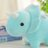
シェリーちゃんシンプルに一定の間隔でリズムを刻み続けるの苦手そうだからドラム大丈夫かなぁって思ってたけど、ベースがハンナちゃんならひたすらハンナちゃんに寄り添って一緒にリズムを刻むっていうのは世界一得意だと思うのでシェリハンのリズム隊はすごく良いものだと思いました
Benさんがリポスト
【Blu-ray特装限定版 追加予約のお知らせ】
『超かぐや姫！』Blu-ray特装限定版につきまして、
多くのお客様にご予約をいただき誠にありがとうございました。
各販売店にて在庫切れの状態となってしまいましたこと、誠に申し訳ございません。
長らくお待たせいたしましたが、
リジスさんがリポスト
#イキヅLIVE配信
いきづらい部！成長中！今すぐこーるみー!!!
ご参加いただいたL高生の皆様ありがとうございました
皆様の応援のおかげで、プロジェクトスタートから１周年を迎えた #いきづらい部！
武器輸出再開は日本の製造業が落ちぶれた証拠だ、とか言ってた人がいたけど、造船業が落ちるところまで落ちてしまった米国から、艦艇建造で頼られる事態になるとはね。(この件も見越しての武器輸出再開なんだろうけども)
海事プレスOnline
@Kaiji_Press
米海軍、艦艇海外建造の容認を米議会に提案。補助艦建造や、戦闘艦の船殻部製造などを同盟国でも可能にする制度変更求める。国内建造を堅持してきた艦艇調達政策見直しか。議会には慎重論も。
https://
kaijipress.com/news/shipbuild
ing/2026/05/201750/
…
KissKissKiss
モテるが萌てるに変換された。
萌アニメの見過ぎで。萌てたい。
ふぇむ(せかんど！)
@000Amaurot
筋トレ？はアニメキャラが萌てるためとかにしててダサいし、顔が上向いたり下向いたり位置が変わってアニメ見れなくなるのでやらない。 x.com/000amaurot/sta…
なるせひろのりさんがリポスト
『ドラゴンクエストXI 過ぎ去りし時を求めて S』Nintendo Switch 2で発売決定
https://
famitsu.com/article/202605
/76172
…
Switch2でドラクエ11Sが楽しめる！ 本日から順次予約開始
プロセカ放送局
ご覧いただきありがとうございました
#プロセカ放送局
あのそよきたー
6p目のやりとり解像度高くてすこ
ちょくじょう
@tyokujou
MyGOまんが 前祝い
https://
pixiv.net/artworks/14527
8298
…
1/2
筋トレ？はアニメキャラが萌てるためとかにしててダサいし、顔が上向いたり下向いたり位置が変わってアニメ見れなくなるのでやらない。
ふぇむ(せかんど！)
@000Amaurot
筋トレや運動はアニメ見れなくなるし自分を愛しているのでする必要がないが、いかんせんアニメを見る体力がなくなってきたので家の中で走りながらアニメ見ることにした。これならアニメ見れるし、苦しいアニメが走ることより苦しくないので良いアニメに見えるし。
BJPの悲願だったインド毛派の殲滅、いつの間にか終わってたのか。日本も見習えとか言ってる人がいるけど、日本にはあんなガチな武闘派極左はいないので…(日本の極左セクトは老人ホーム状態ですし)
インドが極左過激組織の壊滅宣言 民主主義を信じず毛沢東を理想、左翼イデオロギーに幻滅 世界行動学
最近リメイク版として発売された『ザ・ハウス・オブ・ザ・デッド 2』に、まさかのVR化MODが登場!!
オリジナル版が全盛期だった90年代には実現不可能だった体験が、未来の技術によって大幅アップデートされた、マジで凄い事例だと僕は思うンだッッ!!
https://
youtube.com/watch?v=paoeIi
xKix0
…
フィリピンの石油備蓄を日本が支援 首脳会談で合意へ、官民で計画策定
フィリピンの石油備蓄を日本が支援 首脳会談で合意へ、官民で計画策定
俺もニューゲームしちゃおうかな
ふぇむ(せかんど！)
@000Amaurot
筋トレや運動はアニメ見れなくなるし自分を愛しているのでする必要がないが、いかんせんアニメを見る体力がなくなってきたので家の中で走りながらアニメ見ることにした。これならアニメ見れるし、苦しいアニメが走ることより苦しくないので良いアニメに見えるし。
筋トレや運動はアニメ見れなくなるし自分を愛しているのでする必要がないが、いかんせんアニメを見る体力がなくなってきたので家の中で走りながらアニメ見ることにした。これならアニメ見れるし、苦しいアニメが走ることより苦しくないので良いアニメに見えるし。
> 電子図書館（情報学広場）におきまして、4月中旬より断続的に実施されておりました大規模メンテナンスは、第6回をもちまして一連の作業が終了いたしました。
https://
ipsj.or.jp/e-library/digi
tal_library.html
…
電子図書館（情報学広場）-情報処理学会
Torishima / INTPさんがリポスト
超かぐや姫にて、担当パートの二原をご作業いただいた方の取材がNHKで放送されました！
↓こちらから視聴できます！
https://
edu.web.nhk/school/watch/b
angumi/?das_id=D0005171025_00000
…
NHK福祉 ハートネット
@nhk_heart
テーマは「福祉的就労」
就労継続支援B型(B型事業所)に注目！
人気アニメの作画を手掛けていたり、
1鉢5万円するコチョウランを栽培していたり。
ユニークな活動をしているB型事業所を、
てれび戦士が取材。
→
https://
web.nhk/tv/an/hntv/pl/
series-tep-J89PNQQ4QW/ep/LPR4L9XRKN#article
…
5/18(月)夜8時Eテレ
ハートネットTV フクチッチ
6月に天気追加がなく、2か月連続して天気追加されることはなく、9月は公募家具と確定しているため、遥誕までに増える天気は最大１つ
Ankerの睡眠特化イヤホン。他人のイビキで眠れない夜に終止符を打つ最強アイテム
Ankerの睡眠特化イヤホン。他人のイビキで眠れない夜に終止符を打つ最強アイテム | ギズモード・ジャパン
「自民党と日本維新の会に加え、野党の国民民主、公明、参政各党も賛成。…衆院では中道改革連合が賛成したが、参院では立憲民主党が反対」
公明が賛成する案件には、中革連は賛成に回らざるをえない、と。中革連の元立憲勢は本当に納得してるんですかね。
「国家情報会議」創設法が成立 スパイ法検討加速、権利保護課題
【雑談】ゲームしながら / ニコ生配信中
【雑談】ゲームしながら
日米ともに半導体関連株がモリモリ上がってて、私も片足突っ込んでるはずなのに、いまいち恩恵を受けていない。もっと来いよ……！人生を変えるレベルの一撃をよ……！
なるせひろのりさんがリポスト
かぐやに驚く彩葉です。
こちらの一連の原画も担当しました。
ダンボールのところが特に大変でした。
#超かぐや姫

親「高校生の娘が注意しても何度も朝帰りしまくるから、夜中の12時に玄関のチェーンしてやるわ」 → 2時頃、とんでもないことになる・・・ #雑談・その他の話
親「高校生の娘が注意しても何度も朝帰りしまくるから、夜中の12時に玄関のチェーンしてやるわ」 → 2時頃、とんでもないことになる・・・ - オレ的ゲーム速報@刃の記事ページ
jin115.com
プロジェクトセカイ カラフルステージ！ feat. 初音ミク【プロセカ】さんがリポスト
プロセカユニットファンミーティング
25時、ナイトコードで。 in 大分
衣装デザインも含めキービジュアルを担当いたしました
チェックよろしくおねがいいたします!!!!
ボディカム視点ホラー「It Reaches」，PS5版を配信開始。DualSenseから手元に伝わる振動などにより，静寂の緊張感や恐怖演出をより強く体感できる
https://
4gamer.net/s/G100085.2605
27057
…
廃病院を舞台にしたサバイバルホラー。敵はキャラクターの“呼吸音”を頼りに追跡してくる
【#プロセカ放送局】39,000ポスト達成
達成報酬の「クリスタル500個」は後日配布を予定しておりますたくさんの投稿ありがとうございました
番組生配信中：
https://
youtube.com/live/Qp1NiXSxg
0Y
…
#プロセカ放送局
2026年5月27日（水）19時30分より「プロセカ放送局 #32」を実施いたします。「プロセカ放送局 #32」では、『プロジェクト...
youtube.com
文旦を剥くのが上手すぎる夫
遊びに来た友人へ夫が“本気おもてなし”→見てみると…… ありえない光景が42万表示「技術とセンス、進化止まらず」
（記事URLはリプから）
友達が遊びに来てくれた際に、文旦を剥くのが得意な夫が用意してくれた“本気のおもてなし”がX（Twitter）で話題に。まるでパティシエかと思うほどすてきなプレートが話題を呼び、投稿は記事執筆現在までに42万回以上表示され、3万3000件以上の「いいね！」を集めています。文旦を剥くのが上手な夫…
nlab.itmedia.co.jp
輿水畏子さんがリポスト
だんだん…
新潟で日本酒の枠を飛び出す「クラフトサケ」 果物やハーブ加え新境地
https://
nikkei.com/article/DGXZQO
CA220HK0S6A520C2000000/?n_cid=SNSTW005&n_tw=1779854742
…
@LBS_localnews
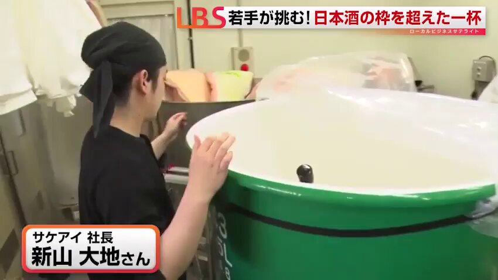
ポン☆潤々さんがリポスト
【動画公開】
／
彩
「縁会！〜ENTERTAINMENTS！」
Dance Practice
＼
#SideMFANFES_WGF でも披露！
彩の宴会場
ご視聴はこちら！
https://
youtu.be/Ax1xOdVYq7Q
#SideM #良いSHOW
ユメステデー！
7がつく日に #ユメステデー！
1日限定のキャンペーン開催中
稽古の回数 +2回
公演の獲得EXP 50％UP
#ユメステ にログインしよう
グッズ情報
たまごっちコラボのカード付きトレーグミが登場
6月22日（月）より全国のコンビニ・スーパーなどで発売予定
詳細はこちら
https://
bandai.co.jp/candy/products
/2026/4570117931581000.html
…
番組生配信中：
https://
youtube.com/live/Qp1NiXSxg
0Y
…
#プロセカ放送局
自動翻訳始まるよ
noteが自動翻訳の提供開始 まず英語、海外読者を獲得
プロジェクトセカイ カラフルステージ！ feat. 初音ミク【プロセカ】さんがリポスト
#セカライ5th Blu-ray発売を記念したコラボキャンペーンを、アニメイトとゲーマーズにて開催
コラボポスター掲出
パネル展
限定キャストコメント動画の放映
店頭抽選会
など、企画盛りだくさんのキャンペーンです
対象店舗などの詳細はこちら
https://
columbia.jp/projectsekai/
#プロセカ放送局
プロジェクトセカイ カラフルステージ！ feat. 初音ミク【プロセカ】さんがリポスト
セカイシンフォニー2026 - Instrumental Harmony -
メインビジュアル公開
Art by 堀泉インコ(
@incoty
)
#セカイシンフォニー
#プロセカ
プロセカユニットファンミーティング
25時、ナイトコードで。 in 大分
チケット販売スケジュールはこちら
番組生配信中：
https://
youtube.com/live/Qp1NiXSxg
0Y
…
#プロセカ放送局
プロセカユニットファンミーティング
25時、ナイトコードで。 in 大分
チェリ子（
@chie_rico
）さん描き下ろしの
キービジュアルを公開
番組生配信中：
https://
youtube.com/live/Qp1NiXSxg
0Y
…
#プロセカ放送局
プロジェクトセカイ カラフルステージ！ feat. 初音ミク【プロセカ】さんがリポスト
お知らせです。
プロジェクトセカイ カラフルステージ！
feat.初音ミク
新曲を、書き下ろしさせていただきました。
ぜひ楽しみにしていただければ嬉しいです。
続報をお待ちください。
#カンザキイオリ
#プロセカ
プロジェクトセカイ カラフルステージ！ feat. 初音ミク【プロセカ】
@pj_sekai
ワールドリンクイベント Part3書き下ろし楽曲を、
カンザキイオリ（@kurogaki0311）さんが担当
番組生配信中：
https://
youtube.com/live/Qp1NiXSxg
0Y
…
#プロセカ放送局
プロセカユニットファンミーティング
25時、ナイトコードで。 in 大分
田辺留依さん、鈴木みのりさん、佐藤日向さんが出演
大分県にて開催いたします
番組生配信中：
https://
youtube.com/live/Qp1NiXSxg
0Y
…
#プロセカ放送局
プロジェクトセカイ カラフルステージ！ feat. 初音ミク【プロセカ】さんがリポスト
クリエイターズフェスタ2026 情報
入場にはチケットが必要となります
会場チケットは現在販売中です
チケットの購入はこちらから
https://
l-tike.com/event/mevent/?
mid=777613
…
イベントの詳細はイベント公式サイトをご確認ください
https://
pjsekai.sega.jp/creatorsfesta2
026/index.html
…
#プロセカ #クリフェス
「ドラゴンクエスト」とZoffがコラボ。モンスターやロトの装備をモチーフにしたメガネを6月5日に発売
https://
4gamer.net/s/G999106.2605
27052
…
メガネには「めがねスライム」および周年ロゴをプリントしたケースと，「めがねだいじに」が入ったオリジナルコマンド柄のメガネ拭きが付属する
なるせひろのりさんがリポスト
ベンがあのマン・スパイダーの噛みつきパワーでやられて、突然能力が目覚めるなんて、ニコラスはこのシーンで完全にキレッキレ、変身シーンは見ていてめっちゃヤバかった。
#SpiderNoir
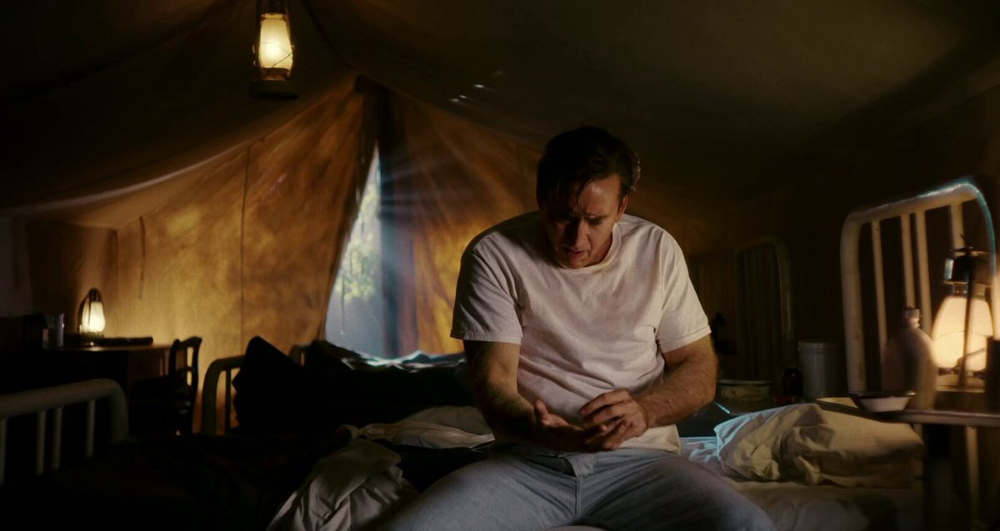
プロジェクトセカイ カラフルステージ！ feat. 初音ミク【プロセカ】さんがリポスト
クリエイターズフェスタ2026 情報
『ヴァイスシュヴァルツ』がスポンサーに決定
チケットの購入はこちら
https://
l-tike.com/event/mevent/?
mid=777613
…
イベントの詳細はイベント公式サイトをご確認ください
https://
pjsekai.sega.jp/creatorsfesta2
026/index.html
…
#プロセカ #クリフェス
プロジェクトセカイ カラフルステージ！ feat. 初音ミク【プロセカ】さんがリポスト
クリエイターズフェスタ2026 情報
ABEMA PPVにてステージコンテンツの冒頭無料配信とコメント読み上げ企画の実施が決定
STAGE1のみX内でコメントを募集します
【#アベマでクリフェス2026】をつけて出演者への質問や感想をポストしてください！
チケットの購入はこちら
プロジェクトセカイ カラフルステージ！ feat. 初音ミク【プロセカ】さんがリポスト
クリエイターズフェスタ2026 情報
オンライン配信チケットを購入すると、限定特典が貰えます
また、通しチケットを購入いただいた方から抽選で出演者のサイン入りグリッターアクリルパネルをプレゼントします
チケットの購入はこちら
https://
l-tike.com/event/mevent/?
mid=777613
…
ネット民、「毒親と絶縁しろ」って軽々しく言いすぎ！
【話題】実際に親族と絶縁した男性の魂の叫びが話題に
■男性はてな民
・水商売をしていた女性と婚約
・親族全員から結婚を止められる
→親族と絶縁して故郷を離れる
・生まれ故郷に20年以上帰らず、祖父母の葬式にも出ず、可愛がっていた甥達
プロジェクトセカイ カラフルステージ！ feat. 初音ミク【プロセカ】さんがリポスト
クリエイターズフェスタ2026 情報
CREATORS PLAYGROUND
supported by NIGHT HIKE
オープニングステージでは、Day1は平田義久さん、Day2はど～ぱみんさんにDJをご担当いただきます
チケットの購入はこちら
https://
l-tike.com/event/mevent/?
mid=777613
…
小さなノームになって人間の物を盗みまくるオンライン協力型アクション「どろぼうノーム」，6月10日にリリース決定
https://
4gamer.net/s/G101053.2605
27055
…
最大5人の仲間と協力し，使えるものを何でも盗み出そう
そうか、イカ腹という言葉を最近のやつは知らないんだな
13th シングル5タイトル
連動購入キャンペーン決定
連動購入特典対象店舗・ECショップにて5タイトル連動購入すると、
ジャケットイラストを使用した「A4クリアファイル」をプレゼント
番組生配信中：
https://
youtube.com/live/Qp1NiXSxg
0Y
…
#プロセカ放送局
うめめおる？！
当該地震。深さ90kｍとだいぶ深い正断層型なので、スラブ内地震っすかね？
https://
earthquake.usgs.gov/earthquakes/ev
entpage/us6000t04s/executive
…
輿水畏子さんがリポスト
おハンナ
ワンダーランズ×ショウタイム
13th シングル
ジャケットイラストを公開
書き下ろしジャケットイラストはtonoshi（
@nempopo
）さんに担当いただきました
番組生配信中：
https://
youtube.com/live/Qp1NiXSxg
0Y
…
#プロセカ放送局
Leo/need
13th シングル
ジャケットイラストを公開
書き下ろしジャケットイラストはアシマ（
@roro046
）さんに担当いただきました
番組生配信中：
https://
youtube.com/live/Qp1NiXSxg
0Y
…
#プロセカ放送局
にじさんじの2025年年越しライブ「CROSSING TONES」のBlu-rayが発売決定。ライバーカメラを厳選した特典映像も収録
https://
4gamer.net/s/G100451.2605
27054
…
予約販売もスタート。販売店別の特典も公開されている
MORE MORE JUMP！
13th シングル
ジャケットイラストを公開
書き下ろしジャケットイラストはtmt（
@t0mat0juice
）さんに担当いただきました
番組生配信中：
https://
youtube.com/live/Qp1NiXSxg
0Y
…
#プロセカ放送局
✧━━━━━━━━━━━━✧
#初星学園放送部
本日21時から放送！
✧━━━━━━━━━━━━✧
まもなく放送開始です！
視聴URL
https://
asobichannel.asobistore.jp/watch/rmhpyhf97
出演
村田綾香 (真城優役)
花岩香奈 (葛城リーリヤ役)
七瀬つむぎ (有村麻央役)
#学マス
下端からスワイプでホームアイコンが出てくるのか…！これは知らないと分からないな
福原アナが出ても、やはりフジからは映像は貰えないw #ぱかライブTV
プロセカ 13th シングル発売決定
第1弾はMORE MORE JUMP！
2026年8月26日より順次リリースしていきます
番組生配信中：
https://
youtube.com/live/Qp1NiXSxg
0Y
…
#プロセカ放送局
ヘンテコな話と心温まる女神様とのやり取りの影に隠れてしまったが、主人公が暴れすぎて他の神から横槍を入れられそうと女神様に言われた後の異世界転生では、主人公が今までと比べると大人しめにカレー皿をやりきって帰ってくるのも、愛だよ。
プロジェクトセカイ カラフルステージ！ feat. 初音ミク【プロセカ】さんがリポスト
先ほど発表になりました
プロセカ書き下ろし2周目、いかせていただきます
来月実装です
よろしくおねがいします
. ＿＿
／＿＿＼
/ | ･ω･ | ｜
＝＝＝＝＝
#プロセカ放送局
プロジェクトセカイ カラフルステージ！ feat. 初音ミク【プロセカ】
@pj_sekai
ワンダーランズ×ショウタイム書き下ろし楽曲を、
和田たけあき（@WADATAKEAKI）さんが担当
番組生配信中：
https://
youtube.com/live/Qp1NiXSxg
0Y
…
#プロセカ放送局
チリ北部で起きたMw6.9の直下型地震の様子とのこと。MMI(改正メルカリ震度階)でⅤ、日本の震度基準だと3～4くらいだと思うので、日本人でも似たような反応よな。これくらいだと机の下に隠れるほどではないし…と思ってみてたら、皿の山が崩れて歓声が上がってて、やはり文化の差はあるっぽい。
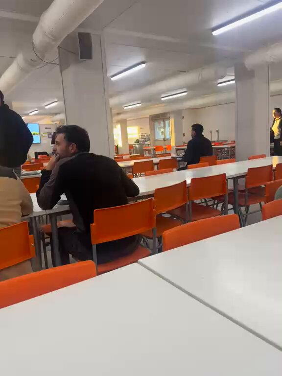
Alerta Mundial
@TuiteroSismico
チリ人は6.9の地震をこう生き抜く
（他のどこかでは地震と見なされるだろう）
「チャリ乗ったらめっちゃ蜂が追いかけてくる、なんで！？」→マジでヤバすぎる原因がこちら・・・ #雑談・その他の話
「チャリ乗ったらめっちゃ蜂が追いかけてくる、なんで！？」→マジでヤバすぎる原因がこちら・・・ - オレ的ゲーム速報@刃の記事ページ
jin115.com
自分の誕生日を祝うフリをしつつ女神様の誕生日にしてしまいプレゼントを渡す主人公、わざわざネックレスに合う服に着替える女神様、これまでの数々のお土産が仕舞い込まれた棚。
真・善・美が備わったアニメ
設定画面に入ったら抜ける方法がわからない…
ワンダーランズ×ショウタイムの書き下ろし楽曲を担当いただく
和田たけあき（
@WADATAKEAKI
）さんよりコメントをいただきました
番組生配信中：
https://
youtube.com/live/Qp1NiXSxg
0Y
…
#プロセカ放送局
ワンダーランズ×ショウタイム書き下ろし楽曲を、
和田たけあき（
@WADATAKEAKI
）さんが担当
番組生配信中：
https://
youtube.com/live/Qp1NiXSxg
0Y
…
#プロセカ放送局
リース大手、資産運用で「持たざる経営」にシフト 外部資金を活用
リース大手、資産運用で「持たざる経営」にシフト 外部資金を活用
北欧通貨、利上げで進む選別 ノルウェー「一抜け」高金利で投資妙味も
北欧通貨、利上げで進む選別 ノルウェー「一抜け」高金利で投資妙味も
ココちゃんはレーザーハープか……
ワールドリンクイベント Part3の書き下ろし楽曲を担当いただく
カンザキイオリ（
@kurogaki0311
）さんよりコメントをいただきました
番組生配信中：
https://
youtube.com/live/Qp1NiXSxg
0Y
…
#プロセカ放送局
Torishima / INTPさんがリポスト
自分でガン詰め方が怖くなってて自分が怖い
Torishima / INTP
@izutorishima
自分でガン詰め方が怖くなってて自分が怖い
在日米海軍、公式Xが乗っ取り被害 プロフィールなど復旧するもIDは現時点で戻らず
在日米海軍、公式Xが乗っ取り被害 プロフィールなど復旧するもIDは現時点で戻らず
Gizmodo USのRaymond Wongエディターから、デザインをリニューアルしたGizmodo Japanへ嬉しいコメントをいただきました！
「Gizmodo Japanでは、ライターや編集者が読者と同じ目線で語りかけ、Youtubeやイベント、Discordを通した読者と編集者の交流も盛んです。
Ray Wong
@raywongy
レトロなNikeのインスピレーション——だからとても馴染み深い感じがするのも当然だ！ めっちゃハマってるよ。
Gizmodo USとGizmodo Japanの間で私が観察した違いの一つは、君たちのところは1) 動画オーディエンスが非常に強いことと、2)
ワールドリンクイベント Part3書き下ろし楽曲を、
カンザキイオリ（
@kurogaki0311
）さんが担当
番組生配信中：
https://
youtube.com/live/Qp1NiXSxg
0Y
…
#プロセカ放送局
アニメ部は仲良くしないためにある。
楽曲追加情報
『永遠甚だしい』を追加
番組生配信中：
https://
youtube.com/live/Qp1NiXSxg
0Y
…
#プロセカ放送局
楽曲追加情報
『いますぐ輪廻』を追加
番組生配信中：
https://
youtube.com/live/Qp1NiXSxg
0Y
…
#プロセカ放送局
楽曲追加情報
『ラズベリー＊モンスター』を追加
番組生配信中：
https://
youtube.com/live/Qp1NiXSxg
0Y
…
#プロセカ放送局
セキュアブートの証明書更新の件は、結局UEFI/BIOS更新が必要なのか、WindowsUpdateで何とかなるのか、何が正解なのかよくわからん。自宅のPCはなぜか2台ともセキュアブートが無効になってたし(よくWin11にアップグレードできたな)。
楽曲追加情報
『プロポーズ』を追加
番組生配信中：
https://
youtube.com/live/Qp1NiXSxg
0Y
…
#プロセカ放送局
楽曲追加情報
超高難易度楽曲コンテスト
プロセカULTIMATE採用作品
『初音狂奏曲第01番「彗惺」』を追加
番組生配信中：
https://
youtube.com/live/Qp1NiXSxg
0Y
…
#プロセカ放送局
楽曲追加情報
一緒に作ろう！第33回楽曲コンテスト
プロセカNEXT採用作品
『ひかりのあつめかた』を追加
番組生配信中：
https://
youtube.com/live/Qp1NiXSxg
0Y
…
#プロセカ放送局
プロジェクトセカイ
× DEEMO × Cytusシリーズ
タイアップ限定アバター衣装「Deemoなりきり衣装」「Vanessaなりきり衣装」を期間中バーチャルショップで販売いたします
※限定アバターは再登場する可能性があります
番組生配信中：
https://
youtube.com/live/Qp1NiXSxg
0Y
…
#プロセカ放送局
このあと、BS11 報道ライブインサイドOUTに出演し、Mythos関連のことを話します。
Valheimを完成させてからやれ、的なコメントが並んでて、気持ちはよくわかるものの、Gamirror Gamesは上海のパブリッシャー(ValheimのパブリッシュはスウェーデンのCoffee Stain)だし、Valheimの開発チームが関わってるわけではないのでは。
『Valheim』開発者の新作宇宙オープンワールドサバイバルゲーム『Starpath』発表。『カウボーイビバップ』『インターステラー』などから影響を受けた広大な宇宙を探索する
ふぇむ(せかんど！)さんがリポスト
「アニメ部」は確かに「界隈」的ではあるし否定はしないけど、別にアニメ愛好家集団というわけではなく、絶賛もするし批判もするしぶっ叩くしコケにする、ただ「アニメを見る」という共通点だけで繋がったオタクなんだよな。
プロジェクトセカイ
× DEEMO × Cytusシリーズ
タイアップ記念
プレミアムプレゼントガチャ開催決定
「DEEMO」「DEEMO II」をイメージした限定衣装が獲得できます
※限定衣装は再登場する可能性があります
番組生配信中：
https://
youtube.com/live/Qp1NiXSxg
0Y
…
#プロセカ放送局
https://
nlab.itmedia.co.jp/cont/articles/
3858319/
…
#池田エライザ #giants #sbhawks
池田エライザ、うなじチラ見せのポニテヘアで始球式→まさかの暴投に苦笑い（1/3） | エンタメ ねとらぼ
プロジェクトセカイ
× DEEMO × Cytusシリーズ
タイアップ記念
スタンプミッション開催決定
クリスタルやタイアップ限定称号が獲得できます
※限定称号は再登場する可能性があります
番組生配信中：
https://
youtube.com/live/Qp1NiXSxg
0Y
…
#プロセカ放送局
ガチャ要素一切なしを改めて明言！『ドラゴンネスト』精神的後継作『ドラゴンソード:アウェイクニング』開発チームAMAセッションログを公開
https://
gamespark.jp/article/2026/0
5/27/167004.html?utm_source=twitter&utm_medium=social&utm_content=tweet
…
プロジェクトセカイ
× DEEMO × Cytusシリーズ
タイアップ記念
ログインキャンペーン開催決定
限定アイテムや、限定家具「Miraiの像」などをプレゼント
※限定アイテムや家具は再登場する可能性があります
番組生配信中：
https://
youtube.com/live/Qp1NiXSxg
0Y
…
#プロセカ放送局
池田エライザさんが東京ドームに登場
“背番号416”のユニホーム姿＆ポニテヘアで約10年ぶりの始球式に挑戦
注目の一球はまさかの大暴投!?
思わず苦笑いする姿に球場もほっこり
うなじチラ見せショット＆イベント詳細はリプから
プロジェクトセカイ
× DEEMO × Cytusシリーズ
楽曲の追加スケジュールはこちら
番組生配信中：
https://
youtube.com/live/Qp1NiXSxg
0Y
…
#プロセカ放送局
式が挙げられるな！
プロジェクトセカイ
× DEEMO × Cytusシリーズ
タイアップ楽曲追加情報
「Masquerade」を追加
番組生配信中：
https://
youtube.com/live/Qp1NiXSxg
0Y
…
#プロセカ放送局
プロジェクトセカイ
× DEEMO × Cytusシリーズ
タイアップ楽曲追加情報
「ANiMA」を追加
番組生配信中：
https://
youtube.com/live/Qp1NiXSxg
0Y
…
#プロセカ放送局
神々が死んだラグナロク後，ヨトゥンの心臓を動力とする船で九界の海を渡る。タクティカル海洋サバイバル「Waters of Ragnarök」発表
https://
4gamer.net/s/G101052.2605
27051
…
巨人の死骸を漁り，古代遺跡を探索し，生存者や怪物と戦いながら，新たな時代を切り開く
プロジェクトセカイ
× DEEMO × Cytusシリーズ
タイアップ楽曲追加情報
「99 Glooms」を追加
番組生配信中：
https://
youtube.com/live/Qp1NiXSxg
0Y
…
#プロセカ放送局
プロジェクトセカイ
× DEEMO × Cytusシリーズ
タイアップ楽曲追加情報
「Saika」を追加
番組生配信中：
https://
youtube.com/live/Qp1NiXSxg
0Y
…
#プロセカ放送局
ウエディングケーキ実装で結婚式できる
よかった
マイネームイズ
@MyNameIs_smrn
右のパンが左のパンに花束を贈っています
プロポーズでしょうか
可愛いですね
プロジェクトセカイ
× DEEMO × Cytusシリーズ
タイアップ楽曲追加情報
「CHAOS」を追加
番組生配信中：
https://
youtube.com/live/Qp1NiXSxg
0Y
…
#プロセカ放送局
プロジェクトセカイ
× DEEMO × Cytusシリーズ
タイアップ楽曲追加情報
「SAIRAI」を追加
番組生配信中：
https://
youtube.com/live/Qp1NiXSxg
0Y
…
#プロセカ放送局
警察「麻薬密売人に近づくために女装して潜入捜査するわ！」→マジでとんでもない成果を上げるｗｗｗｗｗｗ #雑談・その他の話
警察「麻薬密売人に近づくために女装して潜入捜査するわ！」→マジでとんでもない成果を上げるｗｗｗｗｗｗ - オレ的ゲーム速報@刃の記事ページ
jin115.com
僕も前から言ってる事だが、みんな麻痺しちゃってるけどAI企業はGoogleとかまでもが悪用し放題の邪悪なAIを平気で提供してて普通に考えたらあり得ない事ですよ。常識論で言えばそうなんだけど法律論で言えばAIの提供してる側は悪くなくて悪用したユーザーが悪いだけとか。そんな事言ったってダメだよ。
ITmedia AI＋
@itm_aiplus
「AIによる権利侵害」に出版・アニメ制作会社など集う国内団体が声明 「看過できない問題」
https://
itmedia.co.jp/aiplus/article
/2605/27/2000000026/
…
まーさんがリポスト
真由を幸せにしようと思うと久美子が不幸になるの何
プロジェクトセカイ
× DEEMO × Cytusシリーズ
タイアップ開催決定
6月21日（日）より開催
番組生配信中：
https://
youtube.com/live/Qp1NiXSxg
0Y
…
#プロセカ放送局
【スマホのAI 徹底検証】使ってわかった、Galaxyの本当に使えるAI機能はこれだ
独自のAI開発も進める、SamsungのAIスマホ、Galaxy今回レビューするスマホは、Androidスマホの覇者、「Galaxy」。Samsungが手掛ける、スマホシェアの常時トップランナーである世界的ブランドです。ここでは、最新の最上
gizmodo.jp
冷蔵庫レベルの保冷力。“約12日間キンキン”を持ち運べて11%オフ #BuyPR
冷蔵庫レベルの保冷力。“約12日間キンキン”を持ち運べて11%オフ | ギズモード・ジャパン
着脱たったの3秒！デスクではスタンドにもなる腰差し型スマホホルダー #BuyPR
着脱たったの3秒！デスクではスタンドにもなる腰差し型スマホホルダー | ギズモード・ジャパン
とりしま (Sub I/O)さんがリポスト
彩葉が可愛すぎる
本日のさくらんぼ情報です。
【お知らせ】
6月に実施を予定しておりましたチアフルカーニバル テストイベントにつきまして、不具合の調査、および修正の追加対応のため実施時期を延期させていただきます。
ご迷惑をおかけしておりますこと、お詫び申し上げます。
#プロセカ
ワールドリンクイベント Part4
7月19日（日）20:00より開催
イベント終了時に書き下ろし楽曲も登場いたします
番組生配信中：
https://
youtube.com/live/Qp1NiXSxg
0Y
…
#プロセカ放送局
渡辺浩弐さんがリポスト
【更新】
YouTubeチャンネルに渡辺浩弐さんの小説の朗読をUPしました。
#朗読
#渡辺浩弐
#デジタルな神様
#ペット
デジタルな神様より「ペット」作：渡辺浩弐朗読：秋長由佳梨株式会社エスエスピー所属声優、秋長由佳梨の朗読です。動画配信技術と...
youtube.com
ワールドリンクイベント Part3
「Into the New Light」
6月8日（月）20:00より開催
番組生配信中：
https://
youtube.com/live/Qp1NiXSxg
0Y
…
#プロセカ放送局
Haruhiko Okumuraさんがリポスト
【URL「圧縮」サービス始めました】
あなたのURLを圧縮し、Discordなどの文字数制限の厳しいサービスへ、ペースト可能にします。
※URL短縮サービスではありません。
APPEND追加情報
下記楽曲に難易度APPENDを追加
「お気に召すまま」
番組生配信中：
https://
youtube.com/live/Qp1NiXSxg
0Y
…
#プロセカ放送局
キズナランクに2つの組み合わせが本実装されます
番組生配信中：
https://
youtube.com/live/Qp1NiXSxg
0Y
…
#プロセカ放送局
ふぇむ(せかんど！)さんがリポスト
マイセカイ 情報
6月に開催される「マイセカイ百景」のテーマはこちら
番組生配信中：
https://
youtube.com/live/Qp1NiXSxg
0Y
…
#プロセカ放送局
マイセカイ 情報
新たな家具が追加されます
家具
・スイーツタウンシリーズ
・ウェディングケーキ
「ウェディングケーキ」の設計図は、6月29日15:30 ～ 7月9日11:59の期間中にログインすると獲得できます
番組生配信中：
https://
youtube.com/live/Qp1NiXSxg
0Y
…
#プロセカ放送局
昔から薄々思っていて、AI系の高速コーディングが実用化されてより実感したんですが、実はコードの品質や開発速度が上がっても助かるPJってそんなに多くないんじゃ…？（クソゲーのコード品質を上げてもクソゲーであることは変わらないため
気づいてた？ Googleお仕事系アプリのアイコンが一新
気づいてた？ Googleお仕事系アプリのアイコンが一新 | ギズモード・ジャパン
マイセカイ 情報
6月のマイセカイミッションパスでは、
期間限定メンバーのヘアスタイル・衣装を着た
ぬいぐるみの設計図が、全6キャラクター分登場します
番組生配信中：
https://
youtube.com/live/Qp1NiXSxg
0Y
…
#プロセカ放送局
自身に色を塗って擬態するマルチプレイ対応のかくれんぼゲーム「めっちゃカメレオン」，6月10日にリリース
https://
4gamer.net/s/G100712.2605
27049
…
隠れる際には場所やポーズ，そして画力が重要な要素になるという
現地集合するのと、現地解散するのと、どっちが偽装結婚っぽく見えるか…
マイセカイ百景
テーマ「絵名BIRTHDAYパーティー'26」で高評価を獲得した作品を紹介
番組生配信中：
https://
youtube.com/live/Qp1NiXSxg
0Y
…
#プロセカ放送局
マイセカイ百景
テーマ「みのりBIRTHDAYパーティー'26」で高評価を獲得した作品を紹介
番組生配信中：
https://
youtube.com/live/Qp1NiXSxg
0Y
…
#プロセカ放送局
一緒につくろう！
プロジェクトセカイ衣装デザインキャンペーン！
「童話」男性用衣装佳作は
MAiCOさんの『誓いのプリンス』
okeokiさんの『Fairytale Weaver』です
番組生配信中：
https://
youtube.com/live/Qp1NiXSxg
0Y
…
#プロセカ放送局
一緒につくろう！
プロジェクトセカイ衣装デザインキャンペーン！
「童話」女性用衣装佳作は
𝙈𝘼𝙏𝘼𝙉𝘼さんの『不思議のお茶会』
HoshikawaMayoさんの『My True Beauty!』です
番組生配信中：
https://
youtube.com/live/Qp1NiXSxg
0Y
…
#プロセカ放送局
まあ、ひとたびラフな接客を認めると、あっという間に欧州や東南アジアレベルの対応に堕ちると思うけど、多くの日本人は本当に耐えられるのか？とは思うわな。店員同士でずっとしゃべりながらレジ通しして、下手したらお釣りもまともに帰ってこないレベル。まあ、私はそれでもいいと思うけどw
もちろん、CtoCに限らず、BtoBのやりとりも大変ラフになって、何度も催促しないとまともに入金すらされないようになると思うけど、まあ、そういうレベルでいいんじゃないですかねw
一緒につくろう！
プロジェクトセカイ衣装デザインキャンペーン！
今回採用された「童話」男性用衣装は、
かしろきのさんの『差し伸べる妖精の王』です
番組生配信中：
https://
youtube.com/live/Qp1NiXSxg
0Y
…
#プロセカ放送局
JKコンビがフルボイスで喋りつつ戦う，やさしめ弾幕STG「赫夜 -カグヤ-」インプレッション［BitSummit］
https://
4gamer.net/s/G094744.2605
27043
…
16：9の画面比率を生かしたステージ構成と，初心者でも遊びやすい弾幕デザインが特徴
一緒につくろう！
プロジェクトセカイ衣装デザインキャンペーン！
今回採用された「童話」女性用衣装は、
夢回廊るらさんの『鏡の国のセカイから』です
番組生配信中：
https://
youtube.com/live/Qp1NiXSxg
0Y
…
#プロセカ放送局
ワールドリンクイベント
『Great Yell for Dreamers！』
【チャプター6】天馬司
5月29日19:59まで開催
#プロセカ
エンドスさんがリポスト
＿人人人人人人人人人人人人＿
＞ 立法目的と立法事実を ＜
＞ 説明できない法案 ＜
￣Y^Y^Y^Y^Y^Y^Y^Y^Y^Y^Y^Y^￣
(･ω･)

保団連（全国保険医団体連合会）
@hodanren
小西議員
「大臣の裁量で診察、検査、処置などを保険除外できる法案の立法事実(必要性)と立法目的は？」
保険局長
「現在、具体的に考えているものはない」
小西議員
「16年間、国会議員やっているが、立法目的と立法事実を説明できない法案に遭遇したのは初めてだ」
5月26日参議院厚労委員会
「ZA/UMに才能とビジョンが健在であることの証明だ」海外レビューハイスコア『ZERO PARADES: For Dead Spies』
https://
gamespark.jp/article/2026/0
5/27/167003.html?utm_source=twitter&utm_medium=social&utm_content=tweet
…
『ドラゴンクエスト』40周年記念セール！ゲーム本編や関連書籍が超お得に！ガイドブックや『ロトの紋章』、『4コママンガ劇場』など最大89%オフに！ #ゲーム業界
『ドラゴンクエスト』40周年記念セール！ゲーム本編や関連書籍が超お得に！ガイドブックや『ロトの紋章』、『4コママンガ劇場』など最大89%オフに！ - オレ的ゲーム速報@刃の記事ページ
jin115.com
二次元特有の足のポーズで静止できる驚異の体幹
「どうなっているんだ?!!」プリキュアのコスプレ→足元を見てみると…… 120万表示の“驚きの光景”に「エグすぎるww」「物理法則を凌駕」
（記事URLはリプから）
「どうなっているんだ?!!」プリキュアのコスプレ→足元を見てみると…… 120万表示の“驚きの光景”に「エグすぎるww」「物理法則を凌駕」（1/2） | コスプレ ねとらぼ
消費税減税しても価格は下がらず? 欧州では値上げが効果帳消し
https://
nikkei.com/article/DGXZQO
CD078OU0X00C26A4000000/?n_cid=SNSTW005&n_tw=1779843218
…
減税分の価格反映が進んだポルトガルの例では、「仕入れ価格が下がっていた時期で値下げしやすかった」と分析されています。
西連寺亜希(さいれんじあき)さんがリポスト
【生放送情報！】
「ぱかライブTV' #3」出走開始！
新育成シナリオやガチャ更新情報などのゲーム最新情報をお届け！
さらに、フリーアナウンサーの福原直英さんをお招きして、お話を伺います！
ご視聴はこちら！
https://
youtube.com/live/VUgJfv2hJ
VI
…
#ウマ娘 #ゲームウマ娘 #ぱかライブTV
『プロセカ放送局 #32』生配信中
このあとはプロセカの新情報をお届け
YouTube Live：
https://
youtube.com/live/Qp1NiXSxg
0Y
…
ニコ生：
https://
live.nicovideo.jp/watch/lv350517
881
…
#プロセカ放送局
情報の密度！
西連寺亜希(さいれんじあき)さんがリポスト
／⌒⌒⌒⊹⊹⌒⌒⌒＼
❝𝟯𝟬％𝗢𝗙𝗙❞𝗦𝗔𝗟𝗘開催中
＼⏝˚˖𓍢⏝⏝⏝⏝⏝⏝༉˚⊹／
「SWEETと呼ぶにはまだ早い」
✑#麻酔 先生
𝗖𝗔𝗦𝗧
#古川慎 さん#小野友樹 さん
˚.꒰会員限定𝟏𝟎𝟎𝟎𝐏プレゼント꒱.˚
セール期間中に［ログインして］
通販をご利用いただくと
#ガルクラ
なるせひろのりさんがリポスト
＼Mr.KARATE参戦記念イラスト公開／
SNKイラストレーターの「なゆた」さんによる描きおろし！
欲望に満ちたサウスタウンを舞台に、新たな“伝説”が始まる。
#CotW #餓狼伝説_MRKARATE参戦
運休中の千葉・いすみ鉄道、一部区間で存廃議論へ 県と検討会議設置
運休中の千葉・いすみ鉄道、一部区間で存廃議論へ 県と検討会議設置
わお！！！意外な組み合わせだ
Haruhiko Okumuraさんがリポスト
最近のデジタル教科書批判、鼻で笑っておけばいいだろう、と思わなくもないのですが、しかし、さすがに黙っていてはいけないのではないか、と思うようになってきて書きました。
デジタル教科書批判への回答｜鈴木秀樹
@soundexplorer
デジタル教科書批判への回答｜鈴木秀樹
なるせひろのりさんがリポスト
橋本駅南口「アリオ橋本」商業施設増築を断念。市のアートラボ再整備事業から辞退
https://
kawariyuku-machida.com/article/87676.
html
…
#相模原市 #橋本 #アリオ #イトーヨーカドー
橋本駅南口「アリオ橋本」商業施設増築を断念。市のアートラボ再整備事業から辞退 【変わりゆく町田の街並み＜地域情報サイト＞】
kawariyuku-machida.com
いるか@心が酒びたっているんださんがリポスト
Twitter、報告項目にいい加減「デマの拡散」をつけて欲しいんじゃが……。
ふぇむ(せかんど！)さんがリポスト
みつあみタイツプリン
とりさんさんがリポスト
数学科が集まると、日常で無理やり数学用語を見つけてしまうという話。
雪之丞さんさんがリポスト
すべての人々の視線が私に注がれる
#NIKKEfanart
#NIKKE
なるせひろのりさんがリポスト
フェラーリ ルーチェ、海外でも馬鹿にされすぎて草
ピコ太郎のPPAPみたいになってるし
とりしま (Sub I/O)さんがリポスト
いるか@心が酒びたっているんださんがリポスト
Happy birthdayそよ！！
#MyGO
なるせひろのりさんがリポスト
玉城デニー「沖縄の平和教育は文科省によって瀬戸際に立たされてる」
「文科省の言った通りなら、教育に対する不当な介入、現場への不当な介入」
なんでこいつ被害者みたいな発言しているの？
お前は加害者だろ。
そもそも文科省は平和教育は否定していないが？
本当に次の選挙で落ちてほしい。

日本経済新聞 電子版（日経電子版）さんがリポスト
スペースXのIPO、みずほ・楽天・SBI証券で募集 NISA対象
スペースXのIPO、みずほ・楽天・SBI証券で募集 NISA対象
Haruhiko Okumuraさんがリポスト
気になった
@_budyonny
数理科学風のLaTeX作成術｜ぶじょんぬい
数理科学風のLaTeX作成術｜ぶじょんぬい
軍手さんがリポスト
勿体無くてここ10年位貯めたままです。
いるか@心が酒びたっているんださんがリポスト
アツドリがアワーノーツになった事に対しての反応、これが1番笑った
輿水畏子さんがリポスト
Acaciaからのお報せです。
輿水畏子さんがリポスト
◆お報せ◆
5/28(木)19:00、
『魔法少女ノ魔女裁判』MVプロジェクト
『ココロノクライ』Episode I 黒部ナノカ
「ぐしゃぐしゃ」
をYouTubeにてプレミア公開いたします。
▼URL▼
https://
youtu.be/QXTp8X_rVas
#まのさば
なるせひろのりさんがリポスト
【コンアカ】ハムスターがゲーム会社“童（わらし）”のゲーム等に関するすべての権利を取得
https://
famitsu.com/article/202605
/76116
…
童タイトルのコンソールアーカイブス第1弾は『撃王 〜紫炎龍』。5月28日より配信。
なお、『トリガーハート エグゼリカ』に関してはコスモマキアーが権利を持っている。
永瀬アンナさんがリポスト
…………
TVアニメ #氷の城壁
予告公開
第9話「自覚」
https://
youtu.be/Zm_YH_1voY8
てってけてってけてってけてってけ
5月28日から毎週木曜よる11時56分～
TBS系28局にて全国同時放送
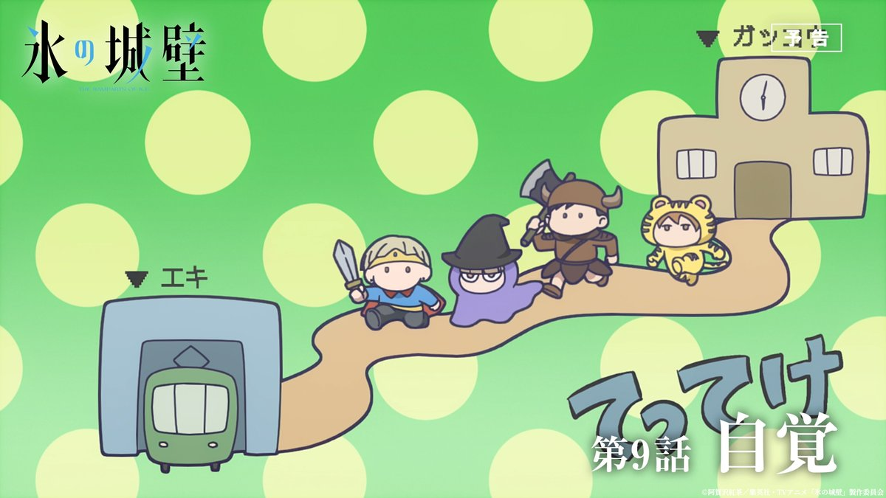
日本経済新聞 電子版（日経電子版）さんがリポスト
JAL、CAが「過度な飲酒」で出発遅延 パイロットに続く不祥事
JAL、CAが「過度な飲酒」で出発遅延 パイロットに続く不祥事
とりしま (Sub I/O)さんがリポスト
【サンプル2/3】
第2章「犬DOGEを作ろう！」/
@mikuta0407
10年ぶりに立川のタワマンに戻ってきたかぐや。大掃除中に彩葉のワンピースを見つけたことから、みんなに犬DOGEの作り方を教える配信をすることを思いつく。
（おそらく）元ネタとなったPocketStation実機で、犬DOGEを再現します！C言語！
とりしま (Sub I/O)さんがリポスト
【サンプル1/3】
第1章「AIヤチヨチャットを作ろう！」
KG型ボディの開発の結果、資金不足に直面する彩葉。ヤチヨが提案により、彩葉が「ツクヨミプログラミング教室」の先生を務めることに！？
HTML+CSS+JS(Vite)+Hono(TypeScript)+OpenRouterで、AIヤチヨチャットを作り上げます！
とりしま (Sub I/O)さんがリポスト
この本のジャンルは『技術同人誌』というものです。超かぐや姫！を題材に、技術（特にプログラミング）について解説しています。
・rayのMVで幼少期の彩葉が相談していたヤチヨのチャット
・かぐやが携帯ゲームキットで作った犬DOGE
これらを実際に作って、プログラミングを学ぶ本に仕上げました！
とりしま (Sub I/O)さんがリポスト
【お知らせ】
6/7(日) 超かぐや姫！オンリー「ヤオヨロー！」にて、技術同人誌『かぐやと学ぶ 超！プログラミング』を頒布します！
・AIヤチヨチャットを作ってWebアプリを学ぶ
・犬DOGEを現実で再現する
・短編小説（2篇）
B5・124ページ・本文モノクロで1,000円予定です！
サンプル等ツリーへ
貝さんさんさんがリポスト
TVアニメ『少女終末旅行』“水族館”テーマのポップアップショップが開催決定
https://
news.denfaminicogamer.jp/news/2605273t
チトとユーリが水族館に訪れるメインビジュアルと特設サイトが公開。東京・AKIBAカルチャーズZONEにて、6月12日～28日の期間限定で開催へ
輿水畏子さんがリポスト
◆コラボ情報◆
共犯の皆様。
「カラオケまねきねこ」様とのコラボイラストを公開いたします。
本日公開されるのは、
「ダークロリータ」な少女たちです。
#まのさば
いるか@心が酒びたっているんださんがリポスト
240番
とりしま (Sub I/O)さんがリポスト
AIにも睡眠を与えるべきかもという研究。LLMにFastWeightsという固定長の内部記憶領域を用意して、コンテキストウインドウが埋まるたびにLLMを一旦睡眠状態に移行してコンテキストの記憶を整理・圧縮させるようにしたらタスクのスコアが上がったとかいう話。今まではコンテキスト溢れたら一旦内容を要
DAIR.AI
@dair_ai
// 言語モデルには睡眠が必要だ //
エージェントに「睡眠」を取らせておけ、皆さん。
真面目な話、これは長期的エージェントから最大限を引き出すという魅力的な論文です。
とりしま (Sub I/O)さんがリポスト
ノリノリで踊ったことを悔いる彩葉さん
#超かぐや姫
Torishima / INTPさんがリポスト
自分の脳内で常に高速に微積分器みたいなのが作動してて未来予測してて、このままこれやってても人生の無駄みたいな判断が起きると一気に辞めてしまう
null-sensei
@GOROman
いや、自分の会社やってて全員解雇とか執行役員だけどいきなり辞めるとかやるのであんま関係ない x.com/hama_jp/status…
ちなみに、私は"青の星連合"、妻は"赤い統一世界"で対立する相容れない陣営。コロナ後に新婚旅行相当でイーデン校などにやっと行けた時は、行きも帰りも別々で現地合流。家族だとバレないスパイファミリーでした。
妻は「ビジネス取れなかったからせめて直行にしたわー」と本当に違う世界でした……
かずぴー冬コミ新刊委託中
@kazupi
【ご報告】
告知がかなり遅くなりましたが、入籍していました。
コロナ禍で式などできず、タイミングを逃したままでしたのでこの場で報告いたします。
海外の同人イベントをきっかけに国際結婚となり、今は大変な世界情勢ですが共通の"好き"で国を越えて繋がれる文化と皆様に感謝しかありません。
いるか@心が酒びたっているんださんがリポスト
5月31日放送のドキュメンタリー番組「ANIME MANGA EXPLOSION」で『響け！ユーフォニアム』を特集！
原作者 #武田綾乃 先生、総監督 #石原立也 氏らが出演
#anime_eupho
#ユーフォ最終楽章
https://
animatetimes.com/news/details.p
hp?id=1779870714&utm_source=twitter&utm_medium=social
…
Torishima / INTPさんがリポスト
なるせひろのりさんがリポスト
悪でしょうよ
ドアパンとか軽く言うけど器物破損ぞ。
ドアパンで犯人見つからず自腹で修理費50万。
この費用聞いても笑えるか？
アハハ気にするなよ！で済む金額か？
故意だろうが未必だろうが
所有者が許すかどうかは当てた側が勝手に決めていい事じゃない。
責任負わずに逃げたら犯罪。
タツ𝕏
@ritten_JBN
素朴な疑問なんだけど…
ドアパンって、そんなに悪なの？？
乗車年数はともかく、車なんて完全に消耗品なんだし、飛び石やら泥やら車が汚れたりキズを負ったりする要素なんていくらでもあるのに、なんでドアパンだけそこまで敵視するのか分からん。
あるいは、あらゆるキズを降車ごとに修繕するの？
貝さんさんさんがリポスト
『魔力枯れのダークエルフ』1巻、大型重版決定しました！
連載3作品目、そして商業デビュー11年目にして、初めての重版です。
ここまで応援してくださった皆様、本当にありがとうございます。
そして、この作品はまだ始まったばかりです。
『魔力枯れのダークエルフ』公式@第1巻発売中!!
@maryokugare_elf
━━*＼大型重版決定!!／*━━
『魔力枯れのダークエルフ』
異例の大型重版が決定
出版日は6月22日（月）に
━━━━━━━━━━━━━━━━
この度、重版が決定しました6月22日（月）より、順次書店、ネット書店に並び始めますこの機会にぜひよろしくお願いします
なるせひろのりさんがリポスト
玉城デニー氏を褒め、古謝げんた氏を落とそうとするアカウントが今月生まれた模様。
工作員としか思えない。
活動家か？
日本経済新聞 電子版（日経電子版）さんがリポスト
株価２倍のゆうちょ銀､海外勢が再発見 地味株から｢AI以外の選択肢｣に
株価2倍のゆうちょ銀､海外勢が再発見 地味株から｢AI以外の選択肢｣に
貝さんさんさんがリポスト
26卒は業務委託だった会社が27卒では社員雇用に変わっているところを複数社確認しています。
年を追うごとに社員雇用の割合が増えている印象です。
山人@耳すまさんがリポスト
笑点で「色男」「スケベ」「コソ泥」のキャラクターで視聴者を魅了し続けてきた三遊亭小遊三師匠。
番組最長老がついに、週刊プレイボーイの袋とじに登場だ。
師匠が自称するのは、往年の名優アラン・ドロン。
「僕らの世代は"いい男"っていうとアラン・ドロン」
深津 貴之 / THE GUILD, noteさんがリポスト
noteの自動翻訳、今日から本格スタートしました！追加の手間なしであなたのnoteが世界に届きます。翻訳を希望しない場合はいつでも設定でOFFにできます。日本のクリエイターとコンテンツをグローバルへ！
note
@note_PR
今日から、AIを活用した自動翻訳がスタート！
クリエイターのみなさんの記事が、世界中の読者に届きやすくなります。翻訳は順次反映されていきます
翻訳を希望しない場合はいつでも設定でOFFにできます。
くわしくは▶︎
https://
note.com/info/n/n7675e5
d8c06d
…
貝さんさんさんがリポスト
新卒アニメーター求人について、元請会社に絞れば7〜8割方は社員雇用ではないかと思います。
2026年現在において余程ネームバリューのある会社でない限り、業務委託で優秀な新卒人材を集めるのは難しいのではないかと感じます。
Torishima / INTPさんがリポスト
このたび、Netflix映画『超かぐや姫！』関連グッズに、
当社所属就労生の佐久間さんが担当した第二原画カットが採用されました！
映画本編への参加に続き、グッズという形でも作品に関われたことは、就労支援の現場としても本当に嬉しい出来事です！
Netflix映画『超かぐや姫！』から、A6サイズのビジュアルアクリルプレートが登場！ 付属の台座を使用し、机や棚などに飾ってお楽しみください。 ※画像・イラスト等は実際の商品とは多少異なる場合がございます、予めご了承下さい。 ■サイズ：縦約105mm×横約148mm（A6サイズ） ■素材：アクリル ■付属品：台座
hobbystock.jp
ポン☆潤々さんがリポスト
【学マス】
学園アイドルマスター The 2nd Period Hatsuboshi IDOL FESTIVAL
へのコラボキッチンカーの出店が決定！
詳細はこちら→
https://
idolmaster-official.jp/news/01_18993
皆さまのご来場、お待ちしております！
#学マス2nd #学マス #idolmaster
AVITAMINOSEさんがリポスト
ジャカルタでも日本企業が改札を作ってカオスになってると報告ありました
ロイヤルミルクティーふも
@fumokmm
瞬時にどこにタッチすればいいのかわからないから、こういうUIはやめて欲しい…
エンドスさんがリポスト
アニメ「天幕のジャードゥーガル」
第２弾PV 解禁
オープニングテーマはSEKAI NO OWARI「Stella」
初回放送は7月4 日（土）夜１１時より2話連続1時間スペシャル
小清水亜美 下野紘 浪川大輔 野島健児ら第2弾キャスト情報も解禁
メインビジュアルも公開です
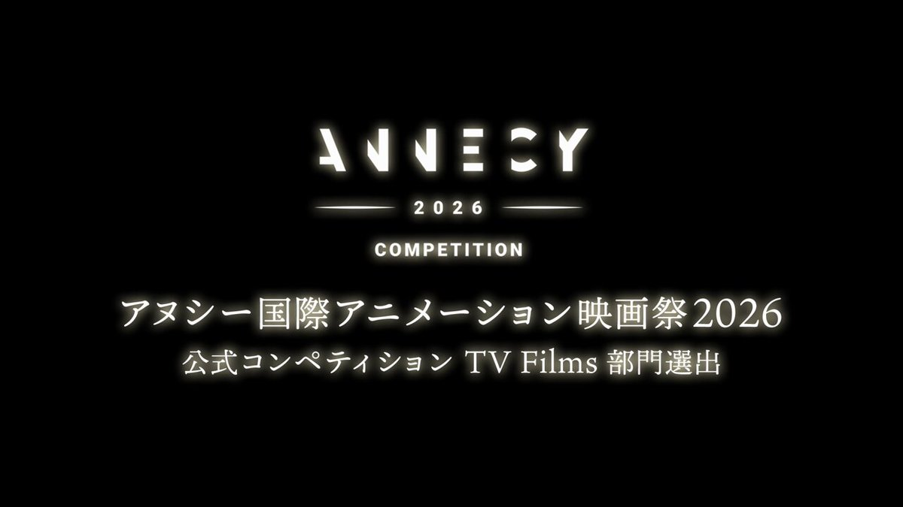
貝さんさんさんがリポスト
ε=(･д･｀*)ﾊｧ…
結局今月ギャラ無し
次の仕事も無いらしいので退職ですわ
とりあえず取っ払いのバイト入れてしのぎます。
更新匂わせられて一年我慢した判断が間違いでしたね( -ࡇ-)ﾊｧｧｧ…
業界離れますので皆様お元気で
猫の投稿は続けます(*^^*)
永瀬アンナさんがリポスト
◻︎秋鹿七緒
CV：#永瀬アンナ
┈┈┈┈┈┈┈┈┈┈┈┈𓈒𓏸
“神隠しの入り江”で倒れていた謎の少女。
警戒心が強いが、和希と交流するうちに
少しずつ心を開いていく。
映画『どこよりも遠い場所にいる君へ』
10月9日(金)公開
#どこきみ
海街@信州さんがリポスト
特急しなのが新しくなるんですね。
エンドスさんがリポスト
高市首相が選挙前に言っていた、
「国論を二分する政策。信任を得たので、進めていく」と。
高市政権始動から、わずか3ヶ月と少し…
さすがにやり過ぎだろ。
↓
• 国旗損壊罪の創設
• 殺傷兵器輸出の全面解禁
• 高額療養費制度の自己負担限度額引き上げ
• OTC類似薬の追加負担
•
しょうさんがリポスト
本当にジブリの海外認知度は低いのか？｜しょう #コンテンツ会議
https://
note.com/note_sho/n/n44
44014ec1cc
…
続きがこちら、2年前の株主総会で「安易にサブスク解禁するのはブランドイメージの毀損に繋がる」として金ローでしかやらんよと言ってたが2年経っても進捗が見られず……
【サブスクよもやも話#1】本当にジブリの海外認知度は低いのか？｜しょう
しょうさんがリポスト
サブスク未解禁のジブリ作品とHuluの話｜しょう
https://
note.com/note_sho/n/ne4
ba49751d31
…
ジブリと日テレが話題なので2年前の記事をあげておきます。
状況が何も変わってない！！！
サブスク未解禁のジブリ作品とHuluの話｜しょう
AVITAMINOSEさんがリポスト
秩父鉄道 利用者少ない山あい区間“今後の事業のあり方検討”
https://
news.web.nhk/newsweb/na/nb-
1000128865
…
秩父鉄道 利用者少ない山あい区間“今後の事業のあり方検討” | NHKニュース
エターナル総書記さんがリポスト
杖入れて無理やり乗ろうとしてきたジジイ杖奪われてそのまま出発して本当に嬉しい
なるせひろのりさんがリポスト
なにが起こってるか？
日本共産党最後の砦の沖縄で
辺野古事故という取り返しのつかない大失態をやらかして、文科省から正しく違法認定食らって崩壊しそうだから、親玉デニーが泡食ってるだけ。

なん速ニュース
@SOWIETK
玉城デニー、我々と学校は文科省に攻撃されてるとの調子で被害者意識が増幅されててヤバい
こりゃ、文科省も報告書を公開するわ
玉城デニー（5/24）支援者集会
「沖縄の平和教育は文科省によって瀬戸際に立たされてる」
Bangさんがリポスト
本日はTシャツのご紹介になります
原作の「あるシーン」をイメージしたタッパーに入れて販売します。色はもちろん赤、サイズはLサイズのみとなります。
是非着て観劇してください
※監修中のサンプルになります。製品は劇場でご確認ください。
チケットはこちらから
http://
l-tike.com/song-of-saya
AVITAMINOSEさんがリポスト
ゴールドマン・サックスによると、
韓国、台湾、インドからの外国人純流出は、
そのほとんどが日本に流入している。
AVITAMINOSEさんがリポスト
速報：スペインの汚職対策警察が、マドリードにある首相ペドロ・サンチェスの社会党本部を急襲しました。
詳細をお読みください：
https://
politico.eu/article/pedro-
sanchez-spain-police-raid-headquarters-of-pm-socialist-party/
…
日本経済新聞 電子版（日経電子版）さんがリポスト
米国からのナフサ輸入5倍に 中東危機で調達シフト、相場は3割高
米国からのナフサ輸入5倍に 中東危機で調達シフト、相場は3割高
エンドスさんがリポスト
✦ː…ストーリー更新…ː✦
2026年7月4日（土）夜11時〜初回2話連続1時間スペシャル！
以降 毎週土曜 夜11時30分〜
テレビ朝日系全国ネット"IMAnimation"枠・BS朝日ほかにて放送
#天幕のジャードゥーガル
sgoｱﾛﾌｧ C調さんがリポスト
そうです 自販機もよく見るとTOICAマークになっているのがありますよ
エンドスさんがリポスト
✦ː──────────────ː✦
第2弾PV解禁
✦ː──────────────ː✦
ドレゲネ (CV：#小清水亜美)
オゴタイ (CV：#下野紘)
チャガタイ (CV：#浪川大輔)
ジュチ (CV：#野島健児)
オープニングテーマ
#SEKAINOOWARI
「Stella」
エンドスさんがリポスト
✦ː────────────────ː✦
メインビジュアル解禁
✦ː────────────────ː✦
少女と妃ー
復讐の絆で結ばれた⼆⼈が
帝国に嵐を起こす。
2026年7月4日（土）夜11時〜初回2話連続1時間スペシャル！
以降 毎週土曜
エンドスさんがリポスト
TVアニメ「#天幕のジャードゥーガル」
メインビジュアル＆第2弾PV解禁！
OPテーマ｜SEKAI NO OWARI「Stella」
初回放送は7月4日(土)夜11時より
2話連続1時間スペシャル決定！
少女と妃。
復讐の絆で結ばれた二人が、地上最強の帝国に嵐を起こす――

リジスさんがリポスト
『葬送のフリーレン』とフェルメール展のコラボが決定！
詳細はこちら
http://
vermeer2026.exhibit.jp/collaborations/
フェルメール《真珠の耳飾りの少女》展
2026年8月21日（金）～9月27日（日）
#フリーレン #frieren
日本経済新聞 電子版（日経電子版）さんがリポスト
パーソナルトレーニング事故、7年で196件 「指導員に基準を」国が提言
パーソナルトレーニング事故、7年で196件 「指導員に基準を」国が提言
なるせひろのりさんがリポスト
中国 “偽 一蘭” 逃亡したもよう。店を直撃すると「もぬけのから」だった。情報を集めると、味はそうとうに不味かったようだ。(KBC NEWS 2026年5月22日OA)
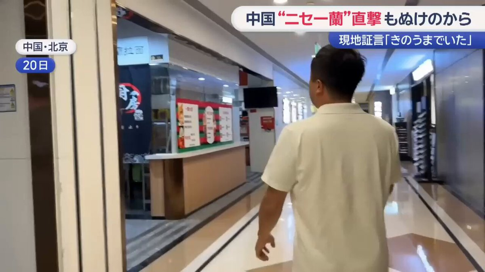
松丸まこと 元足立区議会議員
@seiryukai
北京に「一蘭ラーメン」の模倣店がオープンしたようだ。建国65年創業だそうだ。 x.com/Shirasu8964228…
日本経済新聞 電子版（日経電子版）さんがリポスト
テレビ朝日HD、新日本プロレスを子会社化 IP開発・グローバル展開
テレビ朝日HD、新日本プロレスを子会社化 IP開発・グローバル展開
ポン☆潤々さんがリポスト
6月限定
「シュヴァルツヴェルダー・キルシュトルテ」
昨年も大変ご好評頂いた
ドイツ語で"黒い森のさくらんぼのケーキ"を、
1ヶ月限定でご用意いたします
キルシュ香るチョコスポンジに、
ミルクのコク豊かなクリームと、カカオの風味が広がるチョコレートクリーム、
AVITAMINOSEさんがリポスト
「嫌な予感がしてきました」
海事プレスOnline
@Kaiji_Press
米海軍、艦艇海外建造の容認を米議会に提案。補助艦建造や、戦闘艦の船殻部製造などを同盟国でも可能にする制度変更求める。国内建造を堅持してきた艦艇調達政策見直しか。議会には慎重論も。
https://
kaijipress.com/news/shipbuild
ing/2026/05/201750/
…
AVITAMINOSEさんがリポスト
少なくとも放射能デマ問題を見てきた人なら共産党と社民党はデマ・陰謀論側に置くよな
黒猫ドラネコ
@kurodoraneko15
参政党はもっと下でいいですね。 x.com/seiun_jp/statu…
AVITAMINOSEさんがリポスト
高市政権になってから、少なくとも省庁側が「炎上を恐れて引っ込む」より「資料を出して判断を仰ぐ」方向に寄ってきているように見える。
これまでなら「政治介入だ！」の大合唱で押し切られていた案件が、
今回は「では調査結果を全文公開します。各自読んで判断してください」になった。
マスゾー(Masuzoh)
@Masuzoh_twt
やはり
公明党離脱はかなりデカいですよね
なるせひろのりさんがリポスト
文科省「はいこれが同志社国際の教育基本法14条違反を裏付ける5つの事実ね」 5ch「一個でも致命的で草 」
https://
crx7601.com/archives/63236
226.html
…
なるせひろのりさんがリポスト
【沖縄県知事選最新支持率】
三枝玄太郎氏情報
自民党調査 調査人数3,202人
玉城デニー氏 51.8%
（女性優勢 20,30,60代〜優勢 無党派60%）
古謝げんた氏 41.0%
（男性優勢 40,50代優勢 無党派25%）
未定 7.2%
沖縄4選挙区は全て玉城デニー氏が優勢
なるせひろのりさんがリポスト
007 First Lightのライティング作業はヤバい
これがGTA 6のナイトクラブに期待するディテールのレベルだ。

テスラさんがリポスト
コスプレ撮影でご利用いただきました。碓氷峠鉄道文化むらではコスプレ撮影の受け入れも行っています。個人・企業問わず、ご利用日1週間前までに専用申込書での申し込みが必要となりますが、公式HPのお問い合わせフォームやお電話でお気軽にお問い合わせください。
nori
@nori_pockets
cosplay
ブルアカ/シュポガキ
ノゾミ@Ka12a5u
photo @akaaki_fu
※ロケ地撮影許可済
#ブルアカ #シュポガキ #BlueArchive
いるか@心が酒びたっているんださんがリポスト
当時価格60万のギター支払い終わった
これで私は戸山香澄になれる
AVITAMINOSEさんがリポスト
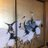
「詰まっているところが分かった。本当は業者名を言ったほうが世の中に早く流れるが、それは勘弁してくれということで、今は、ちゃんと容量があるのだから心配せずにお客さんに出してほしいとやっている」オイルショック時にできた法律では、ガメてる会社は調査対象になる。
原油供給「来年以降まで心配ない」自民・萩生田氏 ナフサ目詰まり原因の業者「分かった」
＞ω＜さんがリポスト
狂気に満ちた絵本を買ってしまった
#かんじるえ
AVITAMINOSEさんがリポスト
いすみ鉄道「廃止も含めて検討」脱線事故で全線運休続く 千葉
https://
news.web.nhk/newsweb/na/nb-
1000128863
…
いすみ鉄道「復旧・廃止も含め検討」脱線事故で運休続く 千葉 | NHKニュース
MICHEE-N（ミッチー・Ｎ）さんがリポスト
TMSレイアウトコンテストで優勝された甘利善一氏が作った長電の車両も一部がヤフオクに流れていたので、ひとまず落札して保管してます……
一体どうされたのやら……
にわとり
@ktyk702004
TMS佳作作品が売られている現状に衝撃
とても悲しい…
［加工品］Nゲージ イエロートレイン+鉄道コレクション 都営新宿線 10-000系 試作車 TMS Nゲージコンペ 2022 佳作
https://
auctions.yahoo.co.jp/jp/auction/x12
28580430
…
AVITAMINOSEさんがリポスト
AMD製の広範なプロセッサーに脆弱性 ～Athlon 3000からRyzen 9000/AI 300までに影響／2026年5月のセキュリティ情報を公開、BIOSの更新を
https://
forest.watch.impress.co.jp/docs/news/2112
012.html
…
由羽@レモンアイコンの人さんがリポスト
本日 #ドラクエの日 に発表されたドラクエ企業コラボまとめ！
zoffメガネコラボ
本日予約開始
https://
zoff.co.jp/shop/contents/
dragonquest.aspx
…
貝印パフコラボ
本日販売開始
https://
store.kai-group.com/shop/e/edragon
q/
…
フェイラー グッズコラボ
本日抽選受付開始
https://
feiler.jp/shop/pages/lot
teryapplication.aspx
…
31アイスコラボ
6月1日販売開始
AVITAMINOSEさんがリポスト
インドが極左過激組織の壊滅宣言 民主主義を信じず毛沢東を理想、左翼イデオロギーに幻滅 世界行動学
https://
sankei.com/article/202605
27-2UALU5XGGFPM5AHUA4ZE2ZF2GM/
…
インド政府が国内の極左過激組織「ナクサライト」の壊滅を宣言した。
インドが極左過激組織の壊滅宣言 民主主義を信じず毛沢東を理想、左翼イデオロギーに幻滅 世界行動学
とりしま (Sub I/O)さんがリポスト
個体識別番号が付いている牛肉を食べたので検索かけた
なんか辛くなった
AVITAMINOSEさんがリポスト
雑誌『Will』に辺野古沖転覆事故の遺族の質問への回答が掲載されているが、それに比べて朝日はなぜ遺族のnoteを都合よく引用するだけの「コタツ記事」なのか。朝日の記者は、これがおかしいとか、恥ずかしいと思わないのか。
橘 玲
@ak_tch
5/23朝日「調査結果 遺族「全容解明や再発防止へ前進」辺野古転覆事故についての文科省の調査結果を受けて、遺族がnoteに心境を綴ったという記事だが、記者はなぜ本人に直接取材していないのか。ブログ記事を引用して都合のいいことを書くのは、ふつう「コタツ記事」といいます。
うみゆき@AI研究さんがリポスト
エヌビディア、台湾に年1500億ドル投資へ ＡＩ革命「震源地」
http://
reut.rs/49o6L8v
エヌビディア、台湾に年1500億ドル投資へ ＡＩ革命「震源地」
貝さんさんさんがリポスト
あつい〜

エンドスさんがリポスト
国家情報会議設置法案が可決したが、政治的中立性を担保する文言もなければ文書もこれから議論というずさんの極み。こんな政権に内調、公安など日本のスパイたちが集結するのか。折しも目に余る思想統制、情報非開示、教育介入、自衛隊の私的利用、名称変更の軍隊化。なぜ、こんな法案を急ぐのか。
AVITAMINOSEさんがリポスト
起動直後の出オチ感w
Anita Chen
@amanitahalo
日本鉄道乗客数マップ！
各鉄道区間の乗車人数がどれくらいかを確認できます。ほぼすべての日本の鉄道事業者を含みます。
http://
anita.garden/japanrail/
AVITAMINOSEさんがリポスト
このロープウェー外見的には非冷房なのになんか涼しいな…と思ったらとんでもない強引なシステムで声出た
ろじぱら ワタナベさんがリポスト
異性の身長を聞いたら「じゃあキスしやすいね」って言うと良いですよ
俺はこれで3回逮捕されて2回死刑になった
リジスさんがリポスト
『旅するワカマツヤ』って結う本を
リジスがだしたけど。。。
地元ではさっぱりだったらしい
でも
コミケで完売したらしい
全部のせ大満開たかぴー
@loveeearth
観音寺まで東北から車で、を諏訪勇者部満開で出したら普通の旅行記をコミケで、よりは捌けた印象
しょうさんがリポスト
先日、昔の紙の図書券で本を買われたお客様がいらっしゃいました。
紙の図書券を扱ったのは、本当に久しぶりです。
聞けば、引き出しの奥に長くしまわれていたそうです。
昔の「紙の図書券」はこの先もずっと使えます。
家中探せば、きっと出てくると思いますよ。
花のき村でも使えます。
いるか@心が酒びたっているんださんがリポスト
調布駅でデカ便漏れそうになってっていうか多分半分漏れてたんだけど、死ぬ気で電車降りてトイレ駆け込んだら長蛇の列で顔消滅
尊厳、プライド、全てを捨て、ごめんなさい漏らしますと叫んだ すると、モーセの海割りのように道が空き、俺は、ショットガンみたいな便を、放った
山人@耳すまさんがリポスト
――#ふたマス !!!!!!――
#水瀬伊織 マンホールが
和歌山県白浜町に設置中！
和歌山県西牟婁郡白浜町
明光バス走り湯バス停付近
＜ふたマス!!!!!!とは＞
20周年を記念し、日本各地に『アイドルマスター』シリーズの
オリジナルマンホールを設置するプロジェクトです
ｽﾀｯｸﾁｬﾝが届いた
AVITAMINOSEさんがリポスト
業界誌の表紙が瑠璃の宝石になるとは夢にも思わなかった！
Haruhiko Okumuraさんがリポスト
ポストで言及されている「坂井君のHalluCitation論文」とは、自然言語処理（NLP）分野の研究者である坂井優介氏（当時・奈良先端科学技術大学院大学）らの研究チームが2026年1月に発表した以下の論文のことです。
https://
arxiv.org/abs/2601.18724
Odashi
@odashi_t
坂井君のHalluCitation論文は界隈の研究者や学生数千人を抹殺するくらいの威力はありそう
輿水畏子さんがリポスト
#まのさば二次創作
なるせひろのりさんがリポスト
話題のMAZDA3の件ですが、損害保険料率算出機構のサイトではこんな感じです。
ちなみにタイムズカーの事故修理での稼働停止中の車両の割合はこんな感じです。
MAZDA3：17%
ヤリス：7%
※独自調査
損害保険料率算出機構
https://
giroj.or.jp
AVITAMINOSEさんがリポスト
座席を2ビットで管理して、00が未予約未発券 10が予約済み未発券、11が発券済み。大学のコンピュータの講義でレポート書いたらすごく褒められたなー
JR「鉄道座席予約システム」に見る“温故創新” 「乗客がビットに見えた」エピソードから学ぶこと（ITmedia
JR「鉄道座席予約システム」に見る“温故創新” 「乗客がビットに見えた」エピソードから学ぶこと（ITmedia エンタープライズ） - Yahoo!ニュース
AVITAMINOSEさんがリポスト
東大先端研ROLESで揉め事との文春砲。概ねの構図は容易に想像できそうに思われつつ、見出しに名前を出されるイズムィコ先生がお気の毒だなあ、と思いました。（こなみかん）
＞東大安全保障ラボで“内戦”が勃発した《女性研究者が「涙の訴え」、小泉悠も仲裁できず…》
週刊文春
@shukan_bunshun
東大安全保障ラボで“内戦”が勃発した《女性研究者が「涙の訴え」、小泉悠も仲裁できず…》
https://
bunshun.jp/denshiban/arti
cles/b14109?utm_source=twitter.com&utm_medium=social&utm_campaign=denshibanPublished
…
#週刊文春
貝さんさんさんがリポスト
#上伊那ぼたん
AVITAMINOSEさんがリポスト
マジだったのか。在日米海軍司令部のアカウント乗っ取りはかなりヤバい気が…
エンドスさんがリポスト
プライバシー侵害にならないよう規定する案が否決って…どうかしてる。
国民の病歴や思想信条まで勝手に調べ上げ利用する権利を、国に無条件でくれてやれと。ありえない。
病気や障害が差別につながるからとカミングアウトせず治療している人だっている。
国が勝手に人の人生に土足で介入するな。
東京新聞デジタル
@tokyo_shimbun
国家情報会議法案、「プライバシー侵害」に歯止め設ける修正案が委員会で否決 政府案が参院本会議で成立へ
https://
tokyo-np.co.jp/article/490792/
とりしま (Sub I/O)さんがリポスト
しょうさんがリポスト
やくしまるえつこ
『ヴィーナスとジーザス』
収録全3曲ストリーミング配信開始
https://
linkco.re/xFCaP39f
1. ヴィーナスとジーザス
2. ミスター・ミスメイカー
3. nekomeshi
#やくしまるえつこ #相対性理論 #荒川アンダーザブリッジ
なるせひろのりさんがリポスト
なんだ、このエグいグラフィック？？？
「クロノ・トリガーの再来 × 最新HD-2D」

ポン☆潤々さんがリポスト
うっふ〜ん♡
オタクよ〜ん♡
TLの皆様方〜爆弾よ〜ん♡
おそらく告知はまだ出てないわ〜ん♡
メンツがエグいから早めに確認して〜ん♡
AVITAMINOSEさんがリポスト
真に地元の農家さんとかなのか
どこからか集まった謎の政治団体なのか
そこで印象がだいぶ変わってくる
JR東海がリニア住民説明会 環境保全策に理解求める 反対派が詰め寄る場面も(テレビ朝日系（ANN）)
https://
news.yahoo.co.jp/articles/5cbeb
abba1dda73d0cf0672a74c42a04ec904ae4?source=sns&dv=sp&mid=other&date=20260527&ctg=dom&bt=tw_up
…
貝さんさんさんがリポスト
#長崎そよ生誕祭2026
#長崎そよ誕生祭2026
Haruhiko Okumuraさんがリポスト
LLM-jpコーパスの日本語データのソースの一つであるPDF資料の生データを公開しました。5000万件あり、日本語関係のPDFのコレクションとしては巨大だと思います。
https://
llmc.nii.ac.jp/topics/post-27
51/
…
AVITAMINOSEさんがリポスト
カナダは、エボラ出血熱の流行を受けて、3つのアフリカ諸国からの住民を一時的に禁止すると発表しました。コンゴ民主共和国、ウガンダ、南スーダンからの住民は、5月27日から90日間、カナダへの入国が禁止されると、カナダ政府は述べました
Canada imposes Ebola-related travel ban, Bahamas to increase screening
AVITAMINOSEさんがリポスト
スペースＸ、米軍自爆ドローンの「スターリンク」利用料金引き上げ
スペースＸ、米軍自爆ドローンの「スターリンク」利用料金引き上げ
いるか@心が酒びたっているんださんがリポスト
昨日池袋駅東口で弾き語りしてたら
なんかこっちみながらなんか書いてるひとがいるな、まとめてダメ出しされんのかなとか思ってたら
俺のこと描いてくれてたみたいでバカアツい
AVITAMINOSEさんがリポスト
今週日曜の嵐ラストツアー最終公演からの問い合わせを見越して、配信をデカいテレビで見る方法を、あらかじめサポートページで案内してるのえらい
AVITAMINOSEさんがリポスト
[プレスリリース]
新型宇宙ステーション補給機1号機（HTV-X1）の大気圏への再突入完了
「新型宇宙ステーション補給機1号機（HTV-X1）の大気圏への再突入完了」を掲載しています。 -宇宙航空研究開発機構 JAXA（ジャクサ）は、宇宙航空分野の基礎研究から開発・利用に至るまで一貫して行う機関です。
jaxa.jp
Torishima / INTPさんがリポスト
土地を数秒でスキャンし最も効率的な駐車場配置を計算してくれるAIが素敵

AVITAMINOSEさんがリポスト
販売情報のお知らせ
世界初の、完全養鰻。
おいしいうなぎをつくり続けてきた、その通過点のひとつとして。
水産庁・水研機構との協働により、いよいよこの日を迎えました。
うなぎの食文化を未来へつなぐために、「情熱」と「覚悟」をもって、皆さまの食卓へお届けしてまいります。
【販売情報】
エンドスさんがリポスト
今朝（27日）朝日「天声人語」が「高市陣営の中傷動画」を取り上げて「不思議で、仕方がない。なぜ高市首相は正面から向き合おうとしないのだろうか。（略）他候補を中傷する動画をSNSに投稿したとする疑惑に対し、はぐらかすような姿勢が目立つ」と珍しく正論を高市氏にぶつけている。覚醒した？
AVITAMINOSEさんがリポスト
このあたりみたいですね。
https://
linearstop.wixsite.com/mysite/blank-2
https://
facebook.com/profile.php?id
=100064677278981#
…
https://
facebook.com/groups/1660417
254086034/?locale=ja_JP
…
https://
pref.shizuoka.jp/kurashikankyo/
kankyo/1040554/1002001/1007412.html
…
AVITAMINOSEさんがリポスト
「常軌を逸している」 早くも欧州を襲う熱波、次々と5月の最高気温更新 ロンドンで35度
「常軌を逸している」 早くも欧州を襲う熱波、次々と5月の最高気温更新 ロンドンで35度
AVITAMINOSEさんがリポスト
>購買力低下止まらず
なお、円安が進んだコロナ禍以降の一人当たり実質消費の伸び率はG7で2位の模様。
エンドスさんがリポスト
衝撃的な答弁ですね
高市政権、何でもありだな…
保団連（全国保険医団体連合会）
@hodanren
小西議員
「大臣の裁量で診察、検査、処置などを保険除外できる法案の立法事実(必要性)と立法目的は？」
保険局長
「現在、具体的に考えているものはない」
小西議員
「16年間、国会議員やっているが、立法目的と立法事実を説明できない法案に遭遇したのは初めてだ」
5月26日参議院厚労委員会
エンドスさんがリポスト
昨日訃報の出たソニー・ロリンズ。
「TVを見るな。本を読め」

Synekura Audio
@synekura_audio
ソニー・ロリンズ - 読書をせよ、テレビは見るな
AVITAMINOSEさんがリポスト
私：ハニー、悪いニュースと良いニュースがあるよ。
妻：…何。
私：悪いニュース - 貯金の100万ドルを計算リソースに使っちゃった。
妻：じゃあ良いニュースは？？
私：中国料理とエチオピア料理の間のベクトルを見つけたんだ
妻：
私：何？エチオピア -
Josef Chen
@josefchen
arXivに新しい論文を公開しました：これまで構築された中で最大の多言語食品モデルを訓練しました。
410万レシピ。7言語。1,790の材料。300次元。
人類の料理すべてを2メガバイトに圧縮しました。
AVITAMINOSEさんがリポスト
辺野古転覆事故で沖縄メディアの追及はどうか、という論点を書きました。取材を総合すると①取材で抗議船に乗せてもらっていた②ヘリ基地反対協はネタ元③今秋の沖縄県知事選に影響しそうという忖度が働いたというところか。地元メディアは大体どこも県政与党に忖度はするが、事故の責任は鋭くネタ元に
辺野古沖転覆事故で見えた「基地反対派と沖縄メディアの近すぎる距離」と形骸化した理念＜石戸諭＞ | 日刊SPA!
AVITAMINOSEさんがリポスト
【ニュース】フロッピーディスク1枚分「1.44MB制限」のゲーム開発コンテストがはじまる。ゲームエンジンの使用も自由、収まるなら
https://
automaton-media.com/articles/newsj
p/20260527-445330/
…
Torishima / INTPさんがリポスト
普段は隠れてしまう屋根の折り込み部分にある「カラーパッチ」に気づいていただき、さらに「ブランドカラーへのこだわり」まで読み取っていただけたことは、紙パックメーカーとしてこれ以上ない喜びです
発見していただきありがとうございます
（日本製紙紙パック営業本部
しなもん
@Cinna2073
あーCMYKGねCMYKG…
CMYKG
ブランドカラーに専用インク割り当て
Torishima / INTPさんがリポスト
世の中には嫌なのに我慢して辞められ無い人が多いけど、自分には我慢の機能が無いのですぐ辞めます。
AVITAMINOSEさんがリポスト
それでもアルゼンチンに比べればかなりマシ
まとめ管理人
@1059kanri
日本でも路線廃止は多くなっているけど、フランスはこんな事になっているのか。 x.com/theepicmap/sta…
AVITAMINOSEさんがリポスト
日本に残された「DOS/V」の名を冠した最後のショップとみられる東京都あきる野市の「DOS/V Factory」に行ってきた。前に記事で紹介してからちゃんと行ってみたいと思ってたんだ。パッケージが変色した在庫（2000年前後と見られる）も多くてちょっとした異空間だった
MICHEE-N（ミッチー・Ｎ）さんがリポスト
今日から某洋上小学校。8泊9日。
9日間、700人以上島に行けるところ、250人しか行けず、満席も多く急な出島はできず、貨物は週2で運休。
上京した島民は夜船で5,000円以下で寝て帰れる所、東京で余計な1泊とジェット船で島嶼が取れたとしても1万円余計にかかるし、島に帰るのも遅くなる。
AVITAMINOSEさんがリポスト
先日ANAの飛行機内で提供される機内Wifiに繋いだら、懐かしい画面が出てきた。
CentOSだったとは…。
そういえば、時々Squidのエラーも見るな。
インターネットキャッシュがSquidで、機内WebサイトはApacheで、すべてCentOSで動作してるということなのかな..。
#ANA #機内Wifi
とりさんさんがリポスト
「バイブコーディング」とかいって浮かれている現状に一石を投じる、とても価値のあるノウハウだと思います！ＡＩ側からしてみると、表面的なコードの整合性だけでなく、機能の意図まで尋ねられているので、深く考えさせられる問いなのかも知れません。
AVITAMINOSEさんがリポスト
台湾有事「ステージゼロ」 データと衛星画像が可視化する中国の試み
日経や讀賣が特集していると「そんなもんか」という感じだけれど、朝日がやると重いな
台湾有事「ステージゼロ」 データと衛星画像が可視化する中国の試み：朝日新聞
AVITAMINOSEさんがリポスト
説明会でリニア反対派がJR東海に詰め寄る
市民団体って言われると地域住民なのか政治団体なのかよくわからないからちゃんと団体の正式名称で報道してほしい
由羽@レモンアイコンの人さんがリポスト
5日間限定の無料券チャレンジ(^^)
今日は冷凍焼餃子無料の1日目です♪
1）このアカウントをフォロー
2）この投稿をリポスト
3）抽選で毎日1万名様に無料券！結果は自動でお知らせ
キャンペーン詳細はこちら♪
AVITAMINOSEさんがリポスト
「Windowsサーバーが、ネットの土台になれなかった理由」に対して動画に来ていた67件のコメントをまとめてみました。
「ライセンスが糞だった」という直球すぎるコメントが最高評価で、「CALというのは何回聞いてもよくわからん」という現場の声が続々と集まってました。
AVITAMINOSEさんがリポスト
HPのBIOS更新の失敗は、ファームウェアのテスト不足だけの話では収まらない。
4月の更新適用後、法人向けPC全般がBitLocker回復ループで起動不能になっている。
回復キーを入れても再起動のたびに同じ画面が出る。セキュアブート証明書の更新が中途半端に止まっているのが原因だ。
AVITAMINOSEさんがリポスト
『文科省幹部によると、当初はHPで公開する方針はなかった。複数の政治家から「文科省の判断は踏み込みすぎだ」など反発の声が相次いだことを踏まえて方針転換した。』
凄い話だな、文句があるならこれ見てから言えやと火の球ストレートを放り込んで来ている。
AVITAMINOSEさんがリポスト
文部科学省、同志社国際の調査結果をHPで公開 武石知華さん遺族も公開求める＜全文＞
https://
sankei.com/article/202605
26-U5GQNHTC4NNBTI4RMPDA4JIJQU/
…
@Sankei_news
産経は文部科学省の発表資料を丸ごと記事に埋め込んでいる。
文部科学省、同志社国際の調査結果をHPで公開 武石知華さん遺族も公開求める＜全文＞
エンドスさんがリポスト
高市政権下で改憲に絡む記事が増えているが、読むたびに作家の井上ひさしさんの言葉が頭に浮かぶ。「憲法は戦争で亡くなった人たちが命を懸けて勝ち取った言葉」「戦争で亡くなった人は語れないが、代わりに語っているのが憲法だ」
AVITAMINOSEさんがリポスト
OmniDriveという新しいプロジェクトにより、一部のBlu-rayドライブが古いコンソールゲームを直接PCにリッピングできるようになります。
カスタムファームウェアをインストールすると、特定の互換性のあるドライブが、Nintendo GameCube、Wii、初代Xbox、Xbox
ろじぱら ワタナベさんがリポスト
肝心のコレが無いじゃないですか
なお、作者は後にシティーハンターの公式二次創作を描くと言う…
AVITAMINOSEさんがリポスト
マンション一室をホテル登録、都心で急増 民泊規制「抜け穴」に
マンション一室をホテル登録、都心で急増 民泊規制「抜け穴」に
とりしま (Sub I/O)さんがリポスト
言語モデルには「睡眠」が必要です
DAIR.AI
@dair_ai
// 言語モデルには睡眠が必要だ //
エージェントに「睡眠」を取らせておけ、皆さん。
真面目な話、これは長期的エージェントから最大限を引き出すという魅力的な論文です。
AVITAMINOSEさんがリポスト
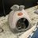
日本鉄道乗客数マップ！
各鉄道区間の乗車人数がどれくらいかを確認できます。ほぼすべての日本の鉄道事業者を含みます。
http://
anita.garden/japanrail/
とりしま (Sub I/O)さんがリポスト
// 言語モデルには睡眠が必要だ //
エージェントに「睡眠」を取らせておけ、皆さん。
真面目な話、これは長期的エージェントから最大限を引き出すという魅力的な論文です。
AVITAMINOSEさんがリポスト
レースの設定で季節を秋にして走りつつ田んぼを見ていた。
春→夏で稲育っていたから秋にはもちろん穂がついていて流石だなぁ…と思ってたんだけど秋の田んぼの地面、汎用の土面かと思いきや、わざわざこの時期の田んぼのひび割れと僅かに湿った感じを再現していて…これ何のゲーム？
#ForzaHorizon6
Wordle 1,803 4/6
AVITAMINOSEさんがリポスト
速報：当局によると、ワシントン州のニッポンダイナウェーブ・パッケージング社で「大規模な化学爆発」が発生し、複数の負傷者が報告された。
Multiple injuries reported following chemical explosion at facility in Washington state
AVITAMINOSEさんがリポスト
日本、台湾、韓国通貨が今こんなに安い理由についての理論があります。
それは、彼らが中国に近いからです。中国は東アジア人口の88%を占め、USDに対して安い通貨を維持する政策を持っているため、地域全体の物価水準を押し下げているのです。
Phryne Astynome
@PAstynome
数週間前、韓国ウォンが1500の壁を突破しました。これは金融危機以来初めてのことで、少し衝撃的です。この国は過去最高の経常収支黒字を記録しているのに、資本がドルに逃げ続けているようです。日本と似たような状況ですね。
AVITAMINOSEさんがリポスト
いやマジで日本の原書価格がクソ高くなってる…
とりあえず本には関税がかからない。関税がかからない状態で価格が設定されてるのに… 漫画本の価格が簡単に上がっちゃったっていうのは…
原書の価格が簡単に上がっちゃったってこと。
日本で800円で買った原書漫画本
망향
@__S2tA
漫画の定価7500ウォン...? これどこまで上がるんですか？
MICHEE-N（ミッチー・Ｎ）さんがリポスト
沖縄の暮らしDAY1146(26.5.27)
行先不明
AVITAMINOSEさんがリポスト
父が死んで貸金庫開けたいと思って、電話して、「父が他界‥」といった瞬間、「あー、まずあくまで一般論として申しあげますとー」とほぼ同内容の案内されたけどな。
貸金庫には偽造パスポートも拳銃も宝の地図も入ってなかった。
早乙女
@omori_gohan_
銀行員が「窓口来る前に亡くなった人の口座からATMで先にお金下ろしてください」なんて案内するわけないだろ x.com/konsuke_money/…
AVITAMINOSEさんがリポスト
「辺野古転覆事故」反対協幹部がHPから削除した中国プロパガンダ機関と“琉球独立運動”とのつながり 中国人記者を招いた大学教授は、独立運動の中心人物だった
https://
news-postseven.com/archives/20260
526_2111346.html?utm_source=twitter.com&utm_medium=social&utm_campaign=shared
…
週刊ポストに寄稿した辺野古スクープ第二弾がネットで出た。なんでここまでベタベタな展開なのか
「辺野古転覆事故」反対協幹部がHPから削除した中国プロパガンダ機関と“琉球独立運動”とのつながり 中国人記者を招いた大学教授は、独立運動の中心人物だった｜NEWSポストセブン
ふぇむ(せかんど！)さんがリポスト
とりさんさんがリポスト
最近は AIに「これを作って」系の指示は一切出さず、自分で作ったプログラムの一部を見せて「これは何をやっているか」と動作を聞く事に徹している。自分の想定と同じなら良いが、違ってたら再確認する。こういう使い方だと、今のところ AIのチェックで自分の思い込みが露呈するのでかなり助かってる。
AVITAMINOSEさんがリポスト
生保が巨額の含み損を抱えたことで、長期国債の最大の買い手が買わなくなった。
政府は仕方なく短期の国債を増やすが、短期債はすぐに借り換えが必要で、金利が上がると利息負担が急増する。
ブルームバーグニュース
@BloombergJapan
生保4社の国内債含み損14兆円に拡大、日生は減損700億円計上－3月末
https://
bloomberg.com/jp/news/articl
es/2026-05-26/TFGUOVKIP3IC00?taid=6a154084652f9000013c4917&utm_campaign=trueanthem&utm_content=japan&utm_medium=social&utm_source=twitter
…
AVITAMINOSEさんがリポスト
WRC Rally Japanって毎年、開催地や主催者から
「SSで使う道を目的に訪れる行為は控えてください」
という案内が出る。
一方で、自動車メーカーやラリーメディアは
「こんな道を走ります！」
と魅力的な映像を発信する。
もちろん、競技の魅力を伝える演出としては理解できる。
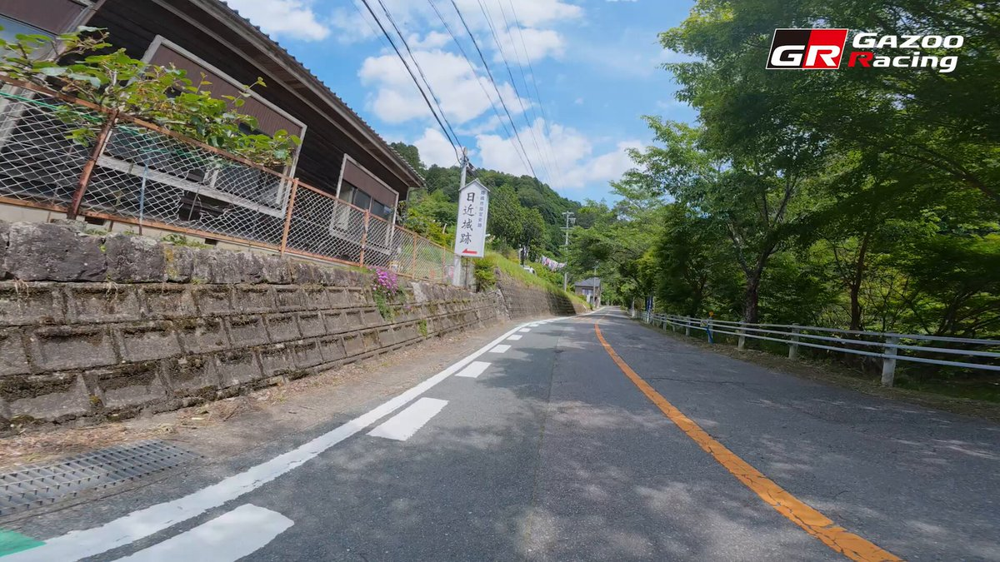
GAZOO Racing
@TOYOTA_GR
WRC #ラリージャパン
スペシャルステージをご紹介
『SS15/19 Nukata（額田SS）』
AVITAMINOSEさんがリポスト
日経新聞
「タングステン、中国からの調達『完全にストップ』 住友電工」
日刊工業新聞
「住友電気工業、リサイクル材量産 タングステン安定供給」
見出しだけ読むと真逆に見えるんですけど、これ同じ会社の、同じテーマを扱った記事なんですよね。
日本経済新聞 電子版（日経電子版）
@nikkei
タングステン、中国からの調達「完全にストップ」 住友電工の井上社長
https://
nikkei.com/article/DGXZQO
UF196VP0Z10C26A5000000/?n_cid=SNSTW005&n_tw=1779678885
…
タングステンは自動車部品などを加工する切削工具の生産に使います。原材料の3割を中国から調達していましたが、輸出規制で2026年1月から供給がなくなりました。
AVITAMINOSEさんがリポスト
ヒント：検索バーの下にあるプロフィール写真と空白のスペースにカーソルを置いたままにしておくと、離席中として表示されません。
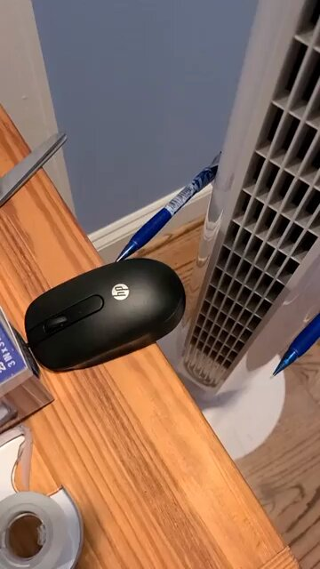
Lázaro
@Eurolazaro
Teamsが「離席中」の黄色にならないようにする人たちの機転
渡辺浩弐さんがリポスト
【告知/拡散歓迎】
渡辺浩弐 さんがメルダーとのコラボにあたり「新作を書き下ろす」と配信内で宣言！
『メルダー・浩弐のサタデーナイトセイバー』アーカイブぜひご覧になってくださいね！
KC高峰ごっこのあとです！
タイムスタンプ概要欄ご利用ください
歌妖曲音楽ユニット『メルダー』と小説家・渡辺浩弐がお届けする土曜の夜のお楽しみ！『メルダーの公開練習』のアフタートーク……だけにと...
youtube.com
AVITAMINOSEさんがリポスト
なんでもかんでも「戦争」に結びつけたがるぐらい戦争で頭がいっぱいの人が、戦争についての解像度が80年前で止まっているのはなぜだ。
AVITAMINOSEさんがリポスト
何度も言ってすみませんですが、ジョナサンはワイン持ち込み1100円です。
1100円も払ってワイン持ち込む意味がわからない、というご意見も頂きましたがワイン好きは感覚がちょっとおかしいのかも知れません
ろじぱら ワタナベさんがリポスト
#自分しか知らないと思う漫画挙げてけ
3年B組一八先生どうにかしてアニメ化して欲しいけど厳しいかぁ。。。。。
AVITAMINOSEさんがリポスト
インドネシアの初代大統領が、第二次世界大戦初期に日本側との協力に抵抗して数か月間頑強に身を隠した家が、今では日本のうどんレストランになっています。
JT
@jiratickets
このような例をもう少し持っている人いますか？ x.com/matteopelleg/s…
AVITAMINOSEさんがリポスト
ソウル駅のこの数の列車を送り込み/回送できないし架線も死んでるとか 今日韓国で列車乗る人かわいそうすぎる
Molugetsoyo
@honol_urulu
今回事故が起きた京義線ソウル区間は、韓国鉄道の輸送を左右するチョークポイントで、この区間で事故が起きるたびに大騒ぎになる。この区間の地下化は、沿線の恩平、西大門、麻浦区の選挙のたびに与野党を問わず公約に掲げられるが、本当に短期的な枝葉末節的な政治的利益のために国家交通の大計を台無
渡辺浩弐さんがリポスト
#渡辺ファンクラブ 的に
ダ・ヴィンチときいて思い出したのはまずこの記事ですね。
#渡辺浩弐 さんのインタビュー
聴き手は #朝宮運河 さんでした
渡辺浩弐
@kozysan
「ダ・ヴィンチ」の写真は、インタビュー中に出てきた「パワースポット」で撮っていただきました(足元のマークに注目)。 #中野ブロードウェイ に来たらここに10秒立って、充電してってね。
※そしてこの写真は『中野ブロードウェイ脱出ゲーム』の表紙イラストと同じ場所、同じポーズなんです。
しょうさんがリポスト
GoHandsを買収したU-NEXTが実は密かにアニメに力を入れていた件｜しょう #アニメ感想文
https://
note.com/note_sho/n/nef
4d8aef915d
…
U-NEXTのGoHands買収について簡単にnoteにまとめました。
GoHandsの直近2作品にU-NEXTの社長が企画としてクレジットされてた話などなど
GoHandsを買収したU-NEXTが実は密かにアニメに力を入れていた件｜しょう
AVITAMINOSEさんがリポスト
俺は"行間が読める"男だから
「9月1日からテメェら覚悟しとけよ」と解釈しています
いるか@心が酒びたっているんださんがリポスト
後半間違っててもメンバーでニコニコしてるの微笑ましいですᵕ̈*
Lies and Truth
#LArcenCiel

AVITAMINOSEさんがリポスト
【速報】
HTV-X1は、再突入に向けた第1回軌道離脱マヌーバ（DOM1）を、
【5/26（火）16:45頃（日本時間）】に完了しました。
軌道離脱マヌーバとは、推進系の噴射により高度を下げ、地球大気圏への再突入に向けて軌道を変更する運用です。
DOM1では、再突入に向けた最初の軌道調整を実施しました。
渡辺浩弐さんがリポスト
昨日の夜から世間を騒がせている事件の報道を見ていて、生成AIが「アドバイザー」から「意思決定者」としてどんどん認識され始めていると感じた。
アニメやマンガで主人公の相棒の妖精やロボットというのは定番だけど、あくまでそれは助言役。
ではそれが「意思決定者」になるとどうなる？
（続く）
AVITAMINOSEさんがリポスト
赤字が続くＪＲ吾妻線の一部区間の今後のあり方を協議する検討会議は、利用者の多くを占める高校生の下校にあわせて、吾妻線と接続する送迎バスを運行する実証実験を始めました。
詳しくは #ほっとぐんま630 でお伝えします。
https://
web.nhk/tv/pl/series-t
ep-XRKZQ8N97V/ep/KV4ML77YQR
…
https://
news.web.nhk/newsweb/na/nb-
1060022014
…
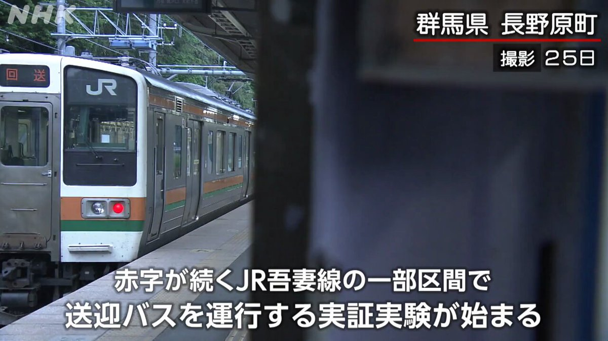
AVITAMINOSEさんがリポスト
チリ人は6.9の地震をこう生き抜く
（他のどこかでは地震と見なされるだろう）
AVITAMINOSEさんがリポスト
日本でも路線廃止は多くなっているけど、フランスはこんな事になっているのか。
Epic Maps
@theepicmap
フランスの鉄道網は、年月を経て縮小してきました。
AVITAMINOSEさんがリポスト
鉄道会社の公式がVRChatで広島駅を公開←
https://
westjr.co.jp/press/article/
2026/05/26/items/260526_00_press_virtalHiroshimasta2u.pdf
…
AVITAMINOSEさんがリポスト
Japanese Space Agency names arrival date for BepiColombo Mercury mission
Japanese Space Agency names arrival date for BepiColombo Mercury mission
行ってみたいけど、平日なのよね…
レトロゲーム大百科
@DLsite537
TVアニメ #花織さんは転生しても喧嘩がしたい第1話先行上映会＆キャストトークショー開催決定!
6月5日(金)
AKIHABARAゲーマーズ本店 6F イベントスペース
出演: #関根明良 #星希成奏 #上田瞳
詳細:
https://
gamers.co.jp/contents/event
_fair/detail.php?id=7539
…
#アニメ花織さん
AVITAMINOSEさんがリポスト
考えるだけでPC操作・脳内発話も 中国がAI脳インプラント開発加速、一般販売も間近か Nature報道
考えるだけでPC操作・脳内発話も 中国がAI脳インプラント開発加速、一般販売も間近か Nature報道
AVITAMINOSEさんがリポスト
この話題で難しいなぁと思うのが、
中国留学中、スーパーの納品業者が鼻歌を歌い段ボールを蹴りながら入ってきた時も、レジ係がスマホでドラマを見ながらレジ打ちをしていた時も、
「これこそが労働者のあるべき姿だ。日本人は中国人を見習え」
𝄞
@pzlui
韓国のバイト？なのかな
客いない間は勉強しててほまに羨ましい
日本のバイトも全部これにしてくれ頼む
山人@耳すまさんがリポスト
【笑点×週プレ60周年コラボ｜三遊亭 小遊三師匠】
「袋とじは、いきなり破かないんだよ。いっぺん覗いて、ニヤって笑うの」
袋とじをネタにしてきた師匠が、ついに袋とじの“中の人”に。
アラン・ドロンになりきって、一体何を!?
週刊プレイボーイは、本日発売。
ⓒ前康輔／集英社
#笑点
うみゆき@AI研究さんがリポスト
自分でガン詰め方が怖くなってて自分が怖い
プロジェクトセカイ カラフルステージ！ feat. 初音ミク【プロセカ】さんがリポスト
《Cytus II》×《プロジェクトセカイ カラフルステージ！ feat. 初音ミク》Teaser
Coming in 2026 SUMMER
------------
Cytus NEWS LIVE イベント振り返り：
https://
youtu.be/GLPVhe4n84I
説明文中には委託先名は書いてなかった。委託したクラウドサービスの稼働率がこんなに低ければ、SLA違反で違約金とか請求できないのかな
https://
ipsj.or.jp/e-library/digi
tal_library.html
…
AVITAMINOSEさんがリポスト
『Valheim』開発者の新作宇宙オープンワールドサバイバルゲーム『Starpath』発表。『カウボーイビバップ』『インターステラー』などから影響を受ける
https://
news.denfaminicogamer.jp/news/260521a
プレイヤー自ら制作した宇宙船に乗り込み、未知の天体や漂流する廃船を探索していく。フレンドとの協力プレイにも対応
山人@耳すまさんがリポスト
夜光虫の海を泳ぐアザラシが流れ星みたいで綺麗だった。

情報処理学会に限らず、同じシステムを使っている大学の機関リポジトリとかも一斉に使えないで、全国的に困っていると思うけれど、何の説明もない
https://
x.com/jnsgsec/status
/2056245259324252351
…
kitata9
@kitata9
情報処理学会の電子図書館がまたメンテナンスしている…週末ワーカーとしては永遠に見れなくて中々困る＆この規模なら情処会員のメールで事前案内しても良いレベルなのではなかろうか。
輿水畏子さんがリポスト
振り向きアンアンちゃん
ポン☆潤々さんがリポスト
アニメ・キャラグッズ買取販売専門店
「トレファクアニメラボ」
立川フロム中武1Fについにオープン！
6/19(金)のオープンに向けて、
店舗で使える【限定クーポン】を
LINEでプレゼント！
「もちみこ」さん作の公式キャラ
みっけちゃんと共に
ご来店をお待ちしています！
友だち追加はこちら
Torishima / INTPさんがリポスト
パッケージ描かせていただきました！ブックレットで永江さんと対談させていただいたり、他にも気になる特典満載です！何卒何卒
『超かぐや姫！』公式
@Cho_KaguyaHime
─── ✩₊⁺⋆⋆⁺₊✧ ───
『超かぐや姫！』Blu-ray
9月9日(水) 発売決定
────────────
通常版／特装限定版の2種が
本日より各店舗にて予約受付開始
ジャケットイラスト
へちま描き下ろし
特装限定版は、
✧「Reply(かぐや＆彩葉 ver.)」
『超かぐや姫！』公式さんがリポスト
#超かぐや姫
Blu-ray 発売決定です…
キャラコメンタリー
そして
かぐやと彩葉の Reply…！？！？！？
ぎゃーーーー
よろしくお願いします！！！
『超かぐや姫！』公式
@Cho_KaguyaHime
─── ✩₊⁺⋆⋆⁺₊✧ ───
『超かぐや姫！』Blu-ray
9月9日(水) 発売決定
────────────
通常版／特装限定版の2種が
本日より各店舗にて予約受付開始
ジャケットイラスト
へちま描き下ろし
特装限定版は、
✧「Reply(かぐや＆彩葉 ver.)」
『超かぐや姫！』公式さんがリポスト
─── ✩₊⁺⋆⋆⁺₊✧ ───
『超かぐや姫！』Blu-ray
9月9日(水) 発売決定
────────────
通常版／特装限定版の2種が
本日より各店舗にて予約受付開始
ジャケットイラスト
へちま描き下ろし
特装限定版は、
✧「Reply(かぐや＆彩葉 ver.)」
『超かぐや姫！』公式
@Cho_KaguyaHime
─── ✩₊⁺⋆⋆⁺₊✧ ───
『超かぐや姫！』Blu-ray
9月9日(水) 発売決定
────────────
通常版／特装限定版の2種が
本日より各店舗にて予約受付開始
ジャケットイラスト
へちま描き下ろし
特装限定版は、
✧「Reply(かぐや＆彩葉 ver.)」
『超かぐや姫！』公式さんがリポスト
Reply、再びレコーディングしました。超かぐやスタッフ一生何か作り続けてて怖いなんて書いてましたが自分もそこに加わることになり気合いを入れて録りました、よろしくお願いします
『超かぐや姫！』公式
@Cho_KaguyaHime
─── ✩₊⁺⋆⋆⁺₊✧ ───
『超かぐや姫！』Blu-ray
9月9日(水) 発売決定
────────────
通常版／特装限定版の2種が
本日より各店舗にて予約受付開始
ジャケットイラスト
へちま描き下ろし
特装限定版は、
✧「Reply(かぐや＆彩葉 ver.)」
『超かぐや姫！』公式さんがリポスト
「Reply(かぐや＆彩葉 ver.)」
超お楽しみに
#超かぐや姫
『超かぐや姫！』公式
@Cho_KaguyaHime
─── ✩₊⁺⋆⋆⁺₊✧ ───
『超かぐや姫！』Blu-ray
9月9日(水) 発売決定
────────────
通常版／特装限定版の2種が
本日より各店舗にて予約受付開始
ジャケットイラスト
へちま描き下ろし
特装限定版は、
✧「Reply(かぐや＆彩葉 ver.)」
Wordle 1,762 5/6
なるせひろのりさんがリポスト
#これでフォロワーさんが増えました